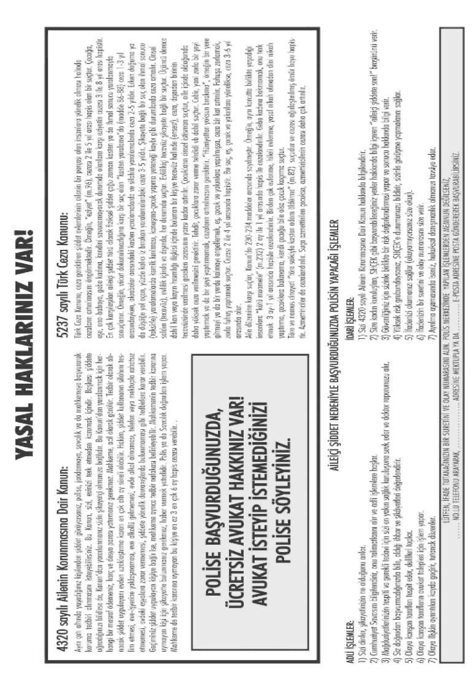
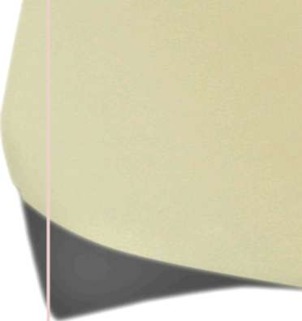
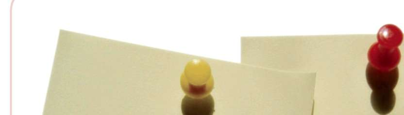

Şiddet mağduru kadınlar, mağduriyetlerinin giderilmesine yönelik alınacak tedbirlerin tespiti için yapılan işlemleri talepleri halinde varsa vekili, yoksa baro tarafından görevlendirilen avukat aracılığıyla takip edebilirler. Özellikle aile içi şiddet vakalarında mağdur olan kadınlar, yaşadıkları olayları ve içinde bulundukları durumları tam olarak anlatamayabilirler.
Böyle durumlarda bu kişilere, CMK’na göre avukat talep etme hakkının bulunduğu hatırlatılmalıdır.
3.2. Aile içi Şiddet Olaylarında Tarafların Durumlarına Göre Soruşturma Sürecinde Uygulanan Adli İşlemler
Yukarıda genel olarak suç soruşturmasına ilişkin kolluk birimlerinde uygulanan adli işlemler incelenmiştir. Bu bölümde de aile içi şiddet olayları ile ilgili müracaatçının ve şüphelinin durumuna göre tesis edilmesi gereken adli işlemler incelenecektir.
3.2.1. Müracaatçının durumuna göre yapılacak işlemler
(1) Müracaatçının şikayetçi olması durumunda yapılacak işlemler: (a) Mağdurun ağır şiddete maruz kalmış olması halinde; 1. 4320 sk göz 128


BÖLÜM
AİLE İÇİ ŞİDDETİN ÖNLENMESİNDE POLİSİN ROLÜ VE UYGULANACAK PROSEDÜRLER
önünde bulundurularak CMK doğrultusunda adli işlem yapılmalıdır.
(Soruşturma olayın ismi “Kasten Yaralama ve 4320 sk kapsamında”
şeklinde belirtilerek yapılabilir. Bunun nedeni aile içi şiddet olaylarında hangi bireylerin aile kapsamında sayılacağı 4320 sk’da belirtilmiş olmasıdır. Örneğin aynı çatı altında yaşayan diğer aile bireyleri de aile sayılır. (Kayınpederin gelinine uyguladığı şiddet vb.) Aile içi şiddet sadece eşler arasında gerçekleşmez. 2. Mağdurun risk değerlendirmesi yapılmalı, özellikle de yüksek riskli durumda olup olmadığına dikkat edilmeli, sonuç ve durum hakkında mağdura bilgi verilmelidir. 3. Mağdur 4320
sayılı Kanun ve diğer imkanlar hakkında bilgilendirilmelidir.
(b) Mağdurun hafif şiddete maruz kalmış olması halinde;(Polis merkezlerinde en sık karşılaşılan durumdur.) 1. 4320 sk göz önünde bulundurularak adli işlem yapılmalıdır.(Örneğin Kasten Yaralama ve 4320 sk kapsamında)
2. Mağdurun risk değerlendirmesi yapılmalı, sonuç ve durum hakkında mağdura bilgi verilmelidir.
3. Mağdur 4320 sayılı Kanun ve diğer imkanlar hakkında bilgilendirilmelidir.
(2) Müracaatçının şikayetçi olmaması durumunda yapılacak işlemler:
(a) Mağdurun ağır şiddete maruz kalmış olması halinde;
1. 4320 sk göz önünde bulundurularak adli işlem yapılmalıdır. (Olayın ismi
“Kasten Yaralama ve 4320 sk kapsamında” şeklinde yazılabilir. Mağdurun ifadesinde şikayetçi olmadığı belirtilir.) 2. Mağdurun risk değerlendirmesi yapılmalı, özellikle de yüksek riskli durumda olup olmadığına dikkat edilmeli, sonuç ve durum hakkında mağdura bilgi verilmelidir.
3. Mağdur 4320 sayılı Kanun ve diğer imkanlar hakkında bilgilendirilmelidir.
(b) Mağdurun hafif şiddete maruz kalmış olması halinde;(Polis merkezlerinde sık karşılaşılan bir durumdur. ) 1. Mağdur doktora gitmek istiyor ve doktor raporu alınıyorsa, adli işlem yapmak zorunludur.
2. Mağdur doktor raporu alınmasını istemiyorsa, bu durum C. Savcısı ile paylaşılır. Savcının talimatı doğrultusunda mağdurun doktor raporu alması sağlanabilir.
3. Mağdurun risk değerlendirmesi yapılmalı, sonuç ve durum hakkında mağdura bilgi verilmelidir.
4. Mağdur 4320 sk ve diğer imkanlar hakkında bilgilendirilmelidir.
129
İÇİ ŞİDDETİN ÖNLENMESİNDE POLİSİN ROLÜ VE UYGULANACAK PROSEDÜRLER
(3) Her durumda yapılacak işlemler:
1. Mağdurun şikayetçi olup olmadığına bakılmaksızın, her durumda yapılacak işlemler de bulunmaktadır.Bu işlemler daha çok idari işlemler olup, şöyle sıralanabilmektedir.
2. Olayın ismi yazılacak,
3. 4320 sayılı Kanun hakkında bilgilendirmede bulunulacak, 4. Risk değerlendirmesi mutlaka yapılacak ve sonuç müracaatçıya bildirilecek, 5. Diğer idari işlemler hakkında bilgi verilecek,
6. Müracaatçıya “Aile içi Şiddete Son” broşürü mutlaka verilecek, 7. Her durumda SHÇEK’na bilgi verilecektir.
8. Mağdura olay(lar)ın tekrar tekrar anlattırılmamasına özen gösterilmelidir. (CMK, m.236; mağdur ile şikâyetçinin dinlenmesi ) 3.2.2. Şüphelinin durumuna göre yapılacak işlemler
(1) Şüpheliye ulaşılamamışsa yapılacak işlemler:
(a) Mağdurun ağır şiddete maruz kalmış olması halinde; Savcılığa bilgi verilir, savcı talimat verirse bulunduğu yerden gidip alınır, yakalama yapılır. Bulunamazsa, dosya ikmalen Savcılığa gönderilir, Savcılık yakalama emri vb. işlemleri başlatır. Şüpheli başka bir polis merkezinin bölgesin-deyse savcının onayıyla oraya yazı gönderilir.
(b) Mağdurun hafif şiddete maruz kalmış olması halinde; Savcılığa bilgi verilir, dosya ikmalen Savcılığa gönderilir. Şüpheliyle ilgili süreç Savcılık ve mahkeme sürecine kalır.
(2) Şüpheliye ulaşılmış ve şüpheli polis merkezine gelmiş ise yapılacak işlemler:
(a) Mağdurun ağır şiddete maruz kalmış olması halinde; Şüphelinin ifadesi alınır, sağlık raporu şlemleri tamamlanır. Dosyası Savcılığa (mevcutlu olarak) gönderilir.
(b) Mağdurun hafif şiddete maruz kalmış olması halinde; Şüphelinin ifadesi alınır, sağlık raporu işlemleri tamamlanır. Dosyası Savcılığa (büyük olasılıkla ikmalen) gönderilir.
(3) Şüpheliye ulaşılmış ve şüpheli polis merkezine gelmemiş ise yapılacak işlemler:
(a) Mağdurun ağır şiddete maruz kalmış olması halinde; Şüpheliye ulaşıla-maması haline benzer.
Savcılığa bilgi verilir, talimat verirse bulunduğu yerden gidip alınır, yakalama yapılır.
Bulunamazsa, dosya ikmalen Savcılığa gönderilir, Savcılık yakalama emri vb. işlemleri başlatır.
130


BÖLÜM
AİLE İÇİ ŞİDDETİN ÖNLENMESİNDE POLİSİN ROLÜ VE UYGULANACAK PROSEDÜRLER
(b) Mağdurun hafif şiddete maruz kalmış olması halinde; Savcılığa bilgi verilir, dosya ikmalen Savcılığa gönderilir. Şüpheliyle ilgili süreç Savcılık ve mahkeme sürecine kalır.
4. Uygulamayı Geliştirmeye Yönelik düzenlemeler ve İdari İşlemler 4.1. Uygulamayı Geliştirmeye Yönelik Düzenlemeler
(1) Töre ve Namus Cinayetleri İle Kadınlara ve Çocuklara Yönelik Şiddetin Sebeplerinin Araştırılarak Alınması Gereken Önlemlerin Belirlenmesi Amacıyla Kurulan Meclis Araştırması Komisyonu Raporu Tüm dünyada olduğu gibi, ülkemizde de kadınlara ve çocuklara yönelik şiddet, gerek ulusal gerekse uluslararası düzeyde yapılan tüm çalışmalar ve tedbirlere rağmen toplumsal bir sorun olarak varlığını sürdürmektedir. Özellikle kadına yönelik olarak gerçekleşen şiddet olaylarının en uç noktası ise kuşkusuz, töre veya namus adına işlenen cinayetlerdir.
Türkiye de, töre ve namus cinayetlerinin işlendiği ülkeler arasında yer almaktadır. Bu durum, ülkemizin uluslararası platformlarda eleştirilmesine, gelişmişlik düzeyi kendisinin çok altındaki ülkelerle aynı düzeyde görülmesine, töre ve namus cinayetlerinin ortadan kaldırılması için zaman zaman önlem almaya davet edilen konuma getirmektedir.
Bu cinayetlerin önlenmesi ve çoğu zaman kadınların ve çocukların yaşamına bile mal olabilen şiddetin araştırılarak, nedenlerinin tespiti, alınması gereken tedbirlerin belirlenmesi ve bu sorunların çözümü için neler yapılması gerektiği konusunun incelenmesi amacıyla TBMM Başkanlığı tarafından 11.10.2005 tarihinde “Töre ve Namus Cinayetleri İle Kadınlara ve Çocuklara Yönelik Şiddetin Sebeplerinin Araştırılarak Alınması Gereken Önlemlerin Belirlenmesi Amacıyla Kurulan Meclis Araştırması Komisyonu” kurulmuştur.
Araştırma Komisyonu çalışmalarını 11.02.2006 tarihinde tamamlamış ve raporunu TBMM Başkanlığı’na sunmuştur. Bu rapor doğrultusunda Başbakanlık tarafından çıkarılan Genelge ile sorumlu kuruluşlar ve bu kuruluşlarla işbirliği içerisinde hareket etmesi gereken kurumlar ayrı ayrı belirtilerek önlemlere ilişkin çalışmaların derhal başlatılması istenmiştir.
(2) 2006/17 sayılı Başbakanlık Genelgesi
Meclis Araştırması Komisyonu Raporu doğrultusunda; çocuk ve kadınlara yönelik şiddet hareketleri ile töre ve namus cinayetlerinin önlenmesi için alınacak tedbirlerle ilgili olarak Başbakanlık tarafından çıkartılan 2006/17 sayılı Genelge 04.07.2006 tarih ve 26218 sayılı Resmi Gazete’de yayımlanarak yürürlüğe girmiştir.
Söz konusu Genelge’de; çocuk ve kadınlara yönelik şiddet, töre ve namus cinayetlerine ilişkin çözüm önerilerinin yaşama geçirilmesinde koordineli çalışması gereken kurumları ve önerileri düzenleyen eylem planında; İçişleri 131
İÇİ ŞİDDETİN ÖNLENMESİNDE POLİSİN ROLÜ VE UYGULANACAK PROSEDÜRLER
Bakanlığı’na atfedilen sorumluluklar bağlamında kolluk kuvvetlerinin eğitim programlarında kadın ve çocuklara karşı şiddete yaklaşım konusunun yer alması, ayrıca Emniyet birimlerinde bu konularda daha fazla kadın memurun görevlendirilmesi ve bu memurların kadına ve çocuğa yönelik şiddet konusunda özel eğitim almaları gerektiği belirtilmektedir.
(3) 2007/8 sayılı İçişleri Bakanlığı Koordinasyon Genelgesi Başbakanlık Genelgesi hükümleri doğrultusunda uygulamada yerine getirilmesi gereken hususlar bağlamında bazı kurum ve kuruluşlar ile il valiliklerinin neler yapması gerektiği konusunda, İçişleri Bakanlığı’na bağlı İller İdaresi Genel Müdürlüğü, Mahalli İdareler Genel Müdürlüğü, Jandarma Genel Komutanlığı ve Başbakanlık Kadının Statüsü Genel Müdürlüğü, Başbakanlık SHÇEK Genel Müdürlüğü ile koordineli bir şekilde Emniyet Genel Müdürlüğü tarafından hazırlanan “Töre ve Namus Cinayetlerinin Önlenmesine Yönelik Tedbirlerin Koordinasyonu” konulu 11.01.2007 tarih ve 2007/8 sayılı genelge 81 İl Valiliğine gönderilmiştir.
4.2. İdari İşlemler
İdari işlemler doğrudan yerine getirilecek işlemler olduğu gibi, başka kurumların sorumluluğuna giren hususlar da mevcuttur. Kolluk kuvvetlerinin karşılaştığı durum veya olay şayet bir başka kurumun sorumluluk alanına giriyorsa, konunun bu kuruma yazılı veya sözlü olarak bildirilmesi ile gerekli tedbirlerin alınması sağlanmaktadır. İdari nitelikteki bu işlemlerin “Bu iş bizim işimiz değil”
gibi bir düşünceyle ya da “aileyi korumak” adına dikkate alınmadan yapılan hukuk dışı uygulamalardan kaçınılarak yerine getirilmesi gerekmektedir.
Kolluk birimlerine bizzat müracaat eden ya da bir ihbar veya şikayet üzerine haklarında işlem yapılan şiddet mağduru kadınlarla ilgili yerine getirilmesi gereken adli işlemlerin yanında ne tür idari işlemlerin veya tedbirlerin uygulanabileceği kolluk görevlileri tarafından tam olarak bilinmemektedir. Ancak burada belirtilmesi gereken önemli bir husus; bu konuda çeşitli görevleri ve sorumlulukları olan kurum ve kuruluşların görevlerini olması gerektiği şekliyle yerine getirmemesidir. Bu durum şiddet mağdurlarının ilk müracaat yeri olan kolluk birimlerinde sistematik bir idari işlem mekanizmasının yürütülmesine engel olmakta, haklarında sadece birtakım adli işlemler yerine getirilerek gönderilmek zorunda kalınan mağdurların tekrar şiddet olaylarına maruz kalmalarına sebep olmaktadır.
Sosyal hizmet birimleriyle koordineli yürütülecek bir sistem oluşturulmadığı sürece kolluk görevlilerinin yaptığı işlemler her zaman eksik ve verimsiz olacaktır.
4.2.1. Aile içi Şiddet Olayları Kayıt Formu
Aile içi ve kadınlara yönelik gerçekleşen şiddet olayları ile ilgili soruşturma yürütülürken, sadece bu olaylarda tanzim edilmesi gereken özel bir form ya 132


BÖLÜM
AİLE İÇİ ŞİDDETİN ÖNLENMESİNDE POLİSİN ROLÜ VE UYGULANACAK PROSEDÜRLER
da tutanak bulunmamaktadır. Bu durum şiddet vakalarının boyutu, sıklığı, ne şekilde ve ne derecede meydana geldiği ile ilgili verilerin düzenli olarak görülememesine sebep olmaktadır.
Mevcut durumun sağlıklı bir şekilde ortaya konamaması ya alınması gerekli tedbirlerin tespitini engellemekte ya da alınan tedbirlerin verimli olamamasına sebep olmaktadır. Bu nedenle, aile içi şiddete ilişkin verilerin sağlıklı bir şekilde toplanabilmesi ve daha sonra analizlerinin yapılabilmesi için Emniyet Genel Müdürlüğü’nce bir kayıt formu geliştirilmiştir.
Bu form ile, aile içi ve özellikle kadına yönelik şiddet olayları ile ilgili istatistiklerin düzenli tutulabilmesi, bu veriler üzerinden analiz çalışmaları yapılarak strateji geliştirilmesi, olaylara karışan şahıslarla ilgili sınıflandırma yapılabilmesi ve çözüm üretilebilmesi, olaylara müdahale eden kolluk görevlilerine sistematik ve standart yaklaşım kazandırılması ve dijital kayıt sistemi oluşturulması amaçlanmıştır.
Form iki bölümden oluşmaktadır.
Birinci bölümde; meydana gelen olayla ilgili bilgiler ( yer, tarih, zaman, müdahale eden görevli vb.), olaya karışan taraflara (mağdur, şüpheli, varsa tanıklar vb.) ilişkin bilgiler ve talimatlar bulunmaktadır.
İkinci bölümde ise; risk değerlendirmesi ile ilgili sorular, risk hesaplama kısmı, idari işlemler ve mağduru bilgilendirme bölümleri bulunmaktadır.
Risk değerlendirmesi kısmında yer alan sorulara mağdurun vereceği cevaplar üzerinden ifade alan görevlinin yapacağı sınıflandırma (yüksek risk/
standart risk) ile sosyal hizmet birimleri ile koordinasyon kurularak mağdurların korunması ve mağduriyetlerin ilgili diğer kurumlarla işbirliği içerisinde giderilmesi amaçlanmıştır. Form geliştirilirken iş yükü oldukça ağır olan polis merkezleri görevlilerinin çok fazla zaman kaybına sebep olacak ayrıntılardan kaçınılmış, dijital bir form doldurma sistemi oluşturulmuştur.
Formun nasıl doldurulacağı, eğitici el kitabında ve interaktif CD’de yer alan filmde ayrıntılı şekilde gösterildiğinden, burada bu konuya girilmemektedir.
4.2.2. Neden ve Nasıl Risk Değerlendirmesi
Risk değerlendirmesi, kişinin şiddet karşısındaki durumunu belirlemek için geliştirilmiş bir tür ölçme aracıdır.Risk değerlendirmesi tahminde bulunmak ya da bir iddiayı ispatlamak için yapılmamaktadır. Amaç, objektif olmak, hem polisi ve müdahalesini hem de başka kuruluşların müdahalelerini etkin-leştirmektir.Risk değerlendirmesi ile;
^ Durumu dikkat gerektiren mağdurları tespit etmek, kıt kaynakları etkin kullanarak mağdur ve çocuklarını hayati tehlikelerden korumak, ölümcül ve/veya ağır yaralanmalardan uzak tutmak için acil önlem almak amaçlanmaktadır.
133
İÇİ ŞİDDETİN ÖNLENMESİNDE POLİSİN ROLÜ VE UYGULANACAK PROSEDÜRLER
^ Mağdur ve yakınlarına, özellikle de çocuklarına hayatı yeniden düzenlemek için imkan ve fırsat yaratılmakta, mevcut hizmetlerden yararlanmalarına kapı açılmaktadır.
^ Risk değerlendirmesi ile, ayrıca, durumu hayati tehlike arz etmeyen ya da ağır yaralanma riski taşımayanlar yani acil önlem gerektirmeyenler için de daha erken dönemde sorun çözme girişiminde bulunmaya fırsat yaratarak, kendileri ve aileleri için daha sağlıklı bir yaşam oluşturmaya katkıda bulunulmaktadır.
Bu değerlendirmeyle şiddet mağdurlarıyla çocuklarının güvenlik düzeyini ve ihtiyaç duyduğu desteği mümkün olduğunca doğru tespit etmeye, buna bağlı olarak da doğru destek organizasyonuna ulaşmalarını kolaylaştırmaya çalışılmaktadır. Çünkü elde edilecek sonuç, sadece Emniyet Teşkilatı için de
ğil, aynı zamanda Savcılık ve SHÇEK için de uyarıcı olacaktır. Risk değerlendirmesi yapılırken, riskin durağan bir şey olmadığı zaman içinde değişebileceği bilinmelidir. Polis merkezine birden çok kez başvurmuş bir mağdurun risk de
ğerlendirmesini her defasında yeniden yapmakta yarar bulunmaktadır. Çünkü durumu önceki başvuruları nedeniyle genel hatlarıyla bilinen bir mağdurun durumunda ve şartlarında bile değişme olmuş olabilir.
Risk değerlendirmesi polis merkezi görevlisinin kendi bilgisine dayanarak yapabileceği bir değerlendirme değildir. Soruların mağdura tek tek okunup mağdurun fikri/düşüncesi neyse onun kayda alınması esastır. Yani, mağdurdan bilgi almak, onun düşüncesine, hissettiklerine, değerlendirmelerine önem verilerek yapılmalıdır. Çünkü şiddete uğradığı ortamı ve şartları en iyi bilen mağdurun kendisidir.
“Aile içi Şiddet Olayları Kayıt Formu” meydana gelen her aile içi şiddet olayı için ve her mağdur için ayrı ayrı doldurulacaktır. Bir mağdurun birden çok şüphelisi varsa, mağdurun her bir şüphelisine göre risk durumu tespit edilmelidir.
4.2.3. Koordinasyon Genelgesi Çerçevesinde Yapılan İdari İşlemler Şiddet mağdurlarının bir takım idari tedbirlerle koruma altına alınması ya da geçici sığınmalarının sağlanması ile ilgili kolluk görevlileri tarafından yerine getirilmesi gereken idari işlemler, “Töre ve Namus Cinayetlerinin Önlenmesine Yönelik Tedbirlerin Koordinasyonu” konulu 2007/8 sayılı İçişleri Bakanlığı Genelgesi ile belirlenmiştir.
Genelge, “Çocuk ve Kadınlara Yönelik Şiddet Hareketleriyle Töre ve Namus Cinayetlerinin Önlenmesi İçin Alınacak Tedbirler” konulu 2006/17 sayılı Başbakanlık Genelgesi hükümleri doğrultusunda uygulamada yerine getirilmesi gereken hususlar bağlamında bazı kurum ve kuruluşlar ile İl Valiliklerinin neler yapması gerektiğini düzenlemektedir. Emniyet Genel Müdürlüğü tarafından ilgili kamu kuruluşlarıyla eşgüdüm içinde hazırlanan Genelge hükümleri doğrultusunda yerine getirilmesi gereken idari işlemler aşağıda maddeler halinde incelenmektedir:
134


BÖLÜM
AİLE İÇİ ŞİDDETİN ÖNLENMESİNDE POLİSİN ROLÜ VE UYGULANACAK PROSEDÜRLER
1. Kolluk birimlerine müracaat eden veya kolluk tarafından tespit edilen şiddet mağduru kadın ve çocukların yaşadıkları travmaya bağlı olarak içinde bulundukları ruhsal durum göz önünde bulundurularak, imkânlar ölçüsünde bayan personelin de katılımıyla, gerekli işlemler yerine getirilmelidir. Şiddet mağduru kadınların kolluk birimlerinde ilk olarak kadın personelle muhatap olarak sorunlarını ve şikâyetlerini anlatmaları çok önemli bir husustur.
Mağdurların içinde bulunduğu travma tik durum göz önünde bulundurularak yapılması gerekenlerin en verimli şekilde yürütülmesi için polis merkezlerinde kadın personelin görevlendirilmesi gerekmektedir. Kadın personelin bulunmadığı ya da görevli olmadığı zamanlarda başka birim görevlilerinden istifade edilmeli ya da acil durumlar için nöbet listeleri (icapçı sistemi) oluşturulmalıdır.
2. Aile içi şiddete maruz kalmış kadınlar ve çocuklarla ilgili her türlü koruma tedbirinin, İl Sosyal Hizmetler Müdürlükleri, ilçelerde ise sosyal hizmet yürüten birim ya da varsa Sosyal Hizmetler Şube Müdürlükleri haberdar edilmek suretiyle ivedilikle alınması sağlanmalıdır.
Bu durum polis merkezleri görevlileri tarafından en çok şikâyet edilen ve istenen şekilde yerine getirilemeyen bir husustur. Kolluk personeli görevlerinin sadece CMK hükümlerine göre ihdas edilen soruşturma sürecine ilişkin adli işlemler olduğunu düşünerek, Cumhuriyet Savcılarının talimatları doğrultusunda hareket etmektedirler.
Bu yaklaşım özellikle aile içi şiddet vakalarında mağdurlar sadece şikâyetçi olduklarında sergilenmektedir.
Mağdur kadınlar şikayetçi olsun ya da olmasın kolluk görevlileri tarafından sosyal hizmet birimleri, varsa sığınma evleri ya da bu konuda çeşitli çalışmaları olan sivil toplum kuruluşları ile irtibata geçilerek mağdurlar bu birimlere yönlendirilmeli ve haklarında uygulanacak idari tedbirler birlikte planlanmalıdır. Mağdurlara 4320 sayılı Ailenin Korunmasına Dair Kanun hakkında bilgilendirmeler yapılmalı, söz konusu birimlerle işbirliği içerisinde şiddetin önlenmesi ve toplumun temeli olan aile hayatının devamına yönelik tedbirlerin alınması sağlanmalıdır.
3. İl ve ilçe sosyal hizmet birimleri 24 saat ulaşılabilecek şekilde görevlendirecekleri personelin iletişim bilgilerini genel kolluk kuvvetlerine bildirmelidir. (SHÇEK il ve ilçe müdürlüklerinin iletişim bilgileri Ek-2 ve Ek
- 3’de kullanıma sunulmuştur.) Sosyal hizmet birimleri mesai saatlerine göre görev yapmaktadır. Bu durum kolluk görevlileri tarafından yukarıda da belirtildiği gibi en çok şikayet edilen husustur. Mesai saatleri dışında intikal eden olaylarla ilgili sosyal hizmet birimleri ile irtibata ge-çilemediği ve gerekli yönlendirmeler yapılamadığı için mağdurlar hakkında uygulanacak tedbirler konusunda her hangi bir işlem tesis edile-135
İÇİ ŞİDDETİN ÖNLENMESİNDE POLİSİN ROLÜ VE UYGULANACAK PROSEDÜRLER
memektedir. Bu nedenle sosyal hizmet birimleri mesai saatleri dışında da kolluk görevlilerinin irtibat kurabilmesi için personel görevlendirmeli ve bu personelin iletişim bilgilerini polis merkezlerine bildirmelidir.
4. SHÇEK’na veya belediyelere bağlı kadın sığınma evlerinde koruma altına alınan bu kişilerin bulundukları yerlerle ilgili gizlilik esaslarına en üst seviyede riayet edilmelidir. Soruşturma sürecine ilişkin işlemler ve uygulanan tedbirlerle ilgili mağdurların yakınlarına ya da başka şahıslara kesinlikle herhangi bir bilgi verilmemelidir. Özellikle mağdurların geçici olarak korunmalarının ve sığınmalarının sağlandığı yerler konusunda daha titiz davranılmalıdır. Bu durum ilgili kanunlara dayanarak çıkartılan genelgelerle bildirilmesine rağmen polis merkezi görevlilerinin zaman zaman gizliliğe uymayarak özellikle şiddet uygulayan şahıslara bilgi verdikleri görülmektedir. Dolayısıyla yerleri tespit edilen mağdurlar tekrar şiddete maruz kalmakta, ayrıca sığınma evlerinin deşifre olmasına sebep olunmaktadır.
5. Kadın sığınma evi bulunmayan yerlerde, şiddet mağduru kadınların, kendi rızaları doğrultusunda, ivedilikle sosyal hizmet birimleri haberdar edilmek suretiyle teslim alınmalarının sağlanması gerekmektedir. Kadın sığınma evi bulunmayan yerlerde, soruşturma ile ilgili işlemler sonuçlandıktan sonra mağdurlara sosyal hizmet birimleri hakkında gerekli bilgilendirmeler yapılmalı ve bu birimlerle irtibata geçilerek mağdurlarla birebir görüş-meleri sağlanmalıdır. E ğer mağdurların kendi rızaları doğrultusunda herhangi bir yerde korunmaları ya da sığınmaları sağlanacaksa; bu tedbirler sosyal hizmet görevlileri refakatinde gerçekleşmelidir.
Mağdurların bu kuruluşlara sevki kolluk birimlerinin görevi değildir. Bu konuda sosyal hizmet birimlerinin hassas olması sağlanmalı, mağdurla görüşme polis merkezinde yapıldıktan sonra ilgili yere sevki esnasında polis merkezi görevlileri herhangi bir görev üstlenmemelidir.
6. Kadın sığınma evi bulunmayan yerlerde, mağdurların ilgili yere sevkine kadar geçen sürede geçici olarak korunmalarının ve sığınmalarının sağlanacağı yerler (otel, pansiyon, misafirhane vb.) konusunda da üst seviyede gizlilik esaslarına riayet edilmelidir. Şiddet mağduru kadınların ilgili yere sevkine kadar geçen sürede korunmalarının ya da sığınmalarının sağlanacağı yerler polis merkezleri olmamalıdır.
Mağdurların polis merkezlerinde bekletilmesi mağduriyetlerin artmasına sebep olmaktadır. A y r ıca polis merkezleri travmaya uğramış bu kişilerin sı
ğınmaları için uygun şartlara sahip yerler değildir. Eğer bulunulan yerde kadın sığınma evi yok ise sosyal hizmet birimleri ile irtibata geçilerek onların tespit ettiği yerlere yönlendirme yapılmalıdır. T ıpkı s ığınma evlerinde olduğu gibi bu yerler konusunda da gizlilik esaslarına kesinlikle uyulmalıdır.
7. M a ğdur kadınların korunmalarının sağlanacağı yerlere sevk edilmeleri es-136


BÖLÜM
AİLE İÇİ ŞİDDETİN ÖNLENMESİNDE POLİSİN ROLÜ VE UYGULANACAK PROSEDÜRLER
nasında, maruz kaldıkları durum veya olayın özelliğine göre gerekli olması halinde polis merkezi görevlileri tarafından refakat edilmelidir. Bazen mağdurlar ağır şiddet eylemlerine maruz kalabilmekte, hatta çeşitli sebeplerle şiddetin en uç noktası olan cinayetlere (töre/namus cinayetleri) kurban olabilmektedirler. Böyle bir durumla karşı karşıya olduğunu beyan eden ya da başkaları tarafından ihbar edilen şiddet mağdurları ile ilgili herhangi bir yerde geçici koruma ya da sığınma sağlanacaksa; bu kişilerin can güvenlikleri göz önünde bulundurularak ilgili yerlere sevk edilmeleri esnasında kolluk görevlileri sosyal hizmet görevlilerine refakat etmelidir.
4320 sayılı Ailenin Korunmasına Dair Kanun’un uygulanmasında olu
şabilecek tereddütleri gidermek, ayrıca çocuk ve kadınlara yönelik şiddet hareketleri ile töre ve namus cinayetlerinin önlenmesi için alınacak tedbirlerle ilgili olarak Başbakanlık tarafından çıkartılan 2006/17 sayılı Genelge doğrultusunda; uygulamada yerine getirilmesi gereken hususlar bağlamında bazı kurum ve kuruluşlar ile kolluk birimleri tarafından yapılması gereken görev ve tedbirleri kapsayan “Töre ve Namus Cinayetlerinin Önlenmesine Yönelik Tedbirlerin Koordinasyonu” konulu Bakanlık Genelgesi bulunmaktadır.
Töre veya namus cinayetlerinin önlenmesi ve aile içerisinde gerçekleşen şiddetin yol açtığı veya açacağı zararların toplumumuzda daha derin ve kalıcı izler bırakmaması için, Genelge’de düzenlenen hükümlerin uygulanmasıyla ilgili personelin bilgilendirilmesini ve herhangi bir aksaklığa meydan verilmemesi hususunda gerekli çalışmaların yapılması istenmiştir.
4.2.4. Mağduru Bilgilendirme ve “Aile İçi Şiddete Son”Broşürü Aile içinde şiddete maruz kalan kişiler genel olarak haklarında uygulanacak adli ve idari işlemlerin neler olduğunu, kendilerine hangi kurum ve kuruluşların destek verebileceğini, haklarında ne tür tedbirlerin uygulanabileceğini, adli süreç sonunda mahkemeden hangi kararların çıkabileceğini ve ilgili kanunlara göre haklarının neler olduğunu bilmemektedirler.
Bu yüzden şiddet mağdurlarının ilk müracaat yerleri olan polis merkezlerinde kolluk görevlileri tarafından yapılacak mağdurları bilgilendirme işlemleri büyük önem arz etmektedir.
Bu kapsamda yukarıda belirtilen hususları içeren bilgilerin yer alacağı bir broşürün hazırlanarak şiddet mağdurlarına polis merkezlerinde verilmesi planlanmıştır.
Hazırlanan broşürde; genel olarak şiddet olayları ile bilgiler, mağdurların yasal hakları, kolluk görevlilerinin yapacağı adli ve idari işlemler, danışmak ve sığınmak için başvurulabilecek yerler ve şiddet anında yapılabilecek işlemler ile ilgili bilgiler bulunmaktadır.
Polis merkezlerinde yeterli sayıda bulundurularak mağdurlara verilecek olan “Aileiçi Şiddete Son” broşürünün bir örneği ekte gösterilmiştir.
137
İÇİ ŞİDDETİN ÖNLENMESİNDE POLİSİN ROLÜ VE UYGULANACAK PROSEDÜRLER
Aileiçi Şiddet Olayları Kayıt Formu
.... İl Emniyet Müdürlüğü
.... .... İlçe Emniyet Müdürlüğü/Amirliği
.... .... Polis Merkezi
Doldurulan form sayısı:
Olayın: Saati: ./... . Tarihi: .../.. ./ 20..
Müracaatın: Saati: .. /........ Tarihi: .../.. ./ 20.. .
Olayın Meydana Geldiği Yer: Ev İşyeri Sokak Diğer: ..
Olayın kapsamındaki kişi sayısı:
Mağdur 1 2 3 4 5 ve daha çok (Şikayetçi olan: 1 2 3 4 5 ve daha çok ) Şüpheli 1 2 3 4 5 v e daha çok
Tanık Yok 1 2 3 4 5 v e daha çok
Formu Dolduran Görevlinin :
Adı/Soyadı:
Dosyanın Cumhuriyet Savcılığına sevk şekli: Mevcutlu
İkmalen
Adı Soyadı:
Doğum tarihi: / /
Çocuksa, kimin bakımında? Anne-baba Anne Baba SHÇEK/ koruyucu aile Diğer: Cinsiyeti K E İş/Meslek: Çalışıyor İşsiz Ev kadını Diğer: Öğrenim Durumu: Okur-yazar değil Okur-yazar İlkokul İlköğretim Lise Y.okul ve üstü Medeni Hali: Bekar Evli Dul Boşanmış
Birlikte yaşadığı çocuk sayısı: 1 2 3 4 5 ve daha çok Uyruğu : T.C. Diğer: ....
Doktor raporu alındı mı? E H
Doktor raporunun sonucu: Alkol Uyuşturucu Darp Yaralama Tecavüz Diğer: .. ....
Özel bir durumu varsa, ne? Hamile Yaşlı Özürlü: Fiziksel Akıl hast. 15-19yaş Kaçak işçi/göçmen Diğer:..............
Zihinsel
Şüpheliyle ilgili ilk başvurusu mu? E H Hayır ise, kaçıncı başvurusu? 2 3 4 5 ve daha çok Şüpheli için aldırttığı 4320 sK tedbir kararı var mı? E H
Şüphelinin risk artırıcı bir özelliği var mı? Yok Var Varsa nedir? Akıl hastası Zihinsel özürlü Alkol-madde bağ.
Bu kısım nasıl dolduruldu: Şüphelinin beyanına göre Mağdurun beyanına göre Adı/Soyadı: Doğum tarihi ./....../.. ...
Çocuksa, kimin bakımında?: Anne-baba Anne Baba SHÇEK/ koruyucu aile Diğer: .............................
Cinsiyeti K E İş/Meslek: Çalışıyor İşsiz Ev kadını Diğer: ....
Öğrenim Durumu: Okur-yazar değil Okur-yazar İlkokul İlköğretim Lise Y.okul ve üstü Medeni Hali: Bekar Evli Dul Boşanmış
Birlikte yaşadığı çocuk sayısı 1 2 3 4 5 ve daha çok Uyruğu : T.C . Diğer : .............................
Doktor raporu alındı mı? E
H
Doktor raporunun sonucu: Alkol Uyuşturucu Yaralama Diğer: ... ..
Hakkındaki aileiçi şiddetle ilgili ilk başvuru mu: E H Aynı suçtan tespiti/kaydı var mı? E H
Hakkında hiç 4320 sK tedbir kararı alınmış mı? E H
Özel bir durumu varsa, nedir? Akıl Hastası Çocuk Özürlü Fiziksel Diğer: .. ...
Zihinsel
Şüphelinin mağdur ile yakınlık derecesi:
Eşi Eski eşi Annesi Babası Kızı Oğlu Kardeşi Diğer: .... ...
Olay Yerindeki Çocuk sayısı:
1 2 3 4 5 ve daha çok Çocuklar mağdur mu? E H
Toplanan deliller / Yapılan tespitler: Görgü tespiti İfadeler Doktor raporu Ateşli silah Delici/kesici alet Fotoğraflar/video kayıtlar Diğer: .. ...
(1) Talimatlar: * Form, şüphelinin mağdura yakınlık derecesine ilişkin bölümde sayılanların tümü için kullanılacaktır.
* Bu form, adli işleme taraf olan mağdur ve şüpheli sayısı birden çoksa, her biri için ayrı ayrı doldurulacaktır.
* Form, mağdurun ifadesini aldıktan hemen sonra, mağdurun kendi beyanına göre doldurulacaktır.
* Şüpheliye ilişkin kısım, şüpheli polis merkezine gelirse ifadesini aldıktan sonra kendisiyle, gelmezse mağdurla birlikte doldurulacaktır.
* Bu form doldurulduktan sonra, bir çıktısı alınıp dosyalanacaktır.
* Mağdur SHÇEK birimine teslim edilirken formun bir sureti de verilecektir.
138


BÖLÜM
AİLE İÇİ ŞİDDETİN ÖNLENMESİNDE POLİSİN ROLÜ VE UYGULANACAK PROSEDÜRLER
Aşağıdaki sorular mağdura tek tek okunarak sorulacak ve mağdurun yanıtlarına göre doldurulacaktır Soruları Evet
Hayır
şüphelinin mağdurla yakınlığının ne olduğunu birinci sayfadan kontrol ederek sorunuz. (Örnek: Eşi, babası vb.) I .Eşiniz/ , bu olayda ya da öncel<i bir aileiçi şiddet olayında önemli bir yaralanmaya yol açtı mı? (Şimdiye kadar yaptığı en kötü eylemi dikkate alın. Kınk yanık sağırlık körlük dikşli yara gibi durumlar varsa, "evef'i işaretleyiniz.) 2. Eşinizin/ silahı var mı? (Ate^'' '^öli'"i I-OC1H ^ıı^hi^r Hn-nf^^^ı ^/^^
3. Ev içi şiddet olaylannda silah k..,,,^, „,, _y,^ ,,, ,^. ,^y,,,,,_„,_ ,-^dar bir kez bile kullanmış ise, "evet" olarak işaretleyin.) 4. Eşinizle boşanma/ayrılma döneminde misiniz? (Son 2-3 ay içinde aynlma karannı söylemiş, boşanma için başvurmuş vb. durumda olanlan "evet" olarak işaretleyiniz.)
5.Daha önce eşinize/ ilişkn aileiçi şiddet müracaatınız var mı? (I. sayfadak ilgili ksımla kontrol ediniz.) 6.Eşiniz/ hakknda hiç 4320 sK tedbir karan alındı mı? (I.sayfadak ilgili ksımla kontrol ediniz.) 7. Eşiniz/.... hiç boğazınızı sıktı mı?
8. Son altı ayda eşiniz/ şiddete daha sık veya daha çok başvurur hale geldi mi?
9. Sizce, eşiniz/.... sizi yaralayabilir ya da sakat bırakabilir mi? (Mağdur bir kez bile fiziksel şiddet ile hastanelik olmuş yada sakat kalma söz konusu olmuş ise, "evet" olarak işaretleyiniz.) I 0. Eşiniz/ hiç sizi öldürmeye kalkştı mı?
I I. Eşiniz/ çocuHannızı döver ya da onlara zarar verir mi?
I 2. Eşinizin/ ailesi ve/veya sizin aileniz namus dnayetini onaylar mı? (Ailelerden biri onaylıyorsa ya da ailelerden birinde daha önce yaşanmış bir namus dnayeti olayı varsa, "evet" olarak işaretleyiniz.) I 3. Özel bir durumunuz (hamilelik yaşlılık zihinsel ya da fiziksel özürlülük akl hastalığı, 15-19 yaş grubunda genç olmak kaçak işçi ya da göçmen olmak vb.) var mı? (I.sayfadak ilgili ksımla kontrol ediniz.) 14. Eşinizin/ risk artıncı bir özelliği (akl hastalığ, zihinsel özürlülük alkol-madde bağımlılığı vb.) var mı? (I .sayfadak ilgili ksımla kontrol ediniz.)
I 5. Siz hiç intihar grisi mi nde ya da tehdidinde bulundunuz mu?
I 6. Eşiniz/ size sözlü ya da fiziksel olarak cinsel şiddet gösterir mi? (İstemediği dnsel ili şklerezorlananlan"evet" olarak işaretleyiniz.) I 7. Eşinizin/., maddi problemleri var mı? (Mesela işsiz mi, kumar oynuyor vb. ise, "evet" olarak işaretleyiniz.) I 8. Eşiniz/ kskançlık nedeniyle size kötü davranır mı?
I 9. Eşiniz/ şimdiye kadar herhangi bir kmseyi ya da sizi öldürmeke tehdit etti mi?
20. Eşiniz/ intihar tehdidinde ya da grisi mi nde bulundu mu?
21. Eşiniz/ aileniz ve/veya arkadaşlarınızla görüşmenizi engeller mi? (Eşi/ taraf ndan eve kütlenen ya da dışanya çıkmasına izin verilmeyenleri "evet" olarak işaretleyiniz.) 22. Eşinizin/ 'm size çocuHannıza zarar vereceğinden korkuyor musunuz?
Risk değerlendirmesi: Evet cevabı s^ısı: (1-15 numaralı sorular için: ) Toplam evet s^ısı: H^ır cevabı sayısı: Yüksek risk: 1-15 numaralı sorularda en az 8 yada toplam 22 soruda en az 12 evet yanıtı veren mağdura durumunun yüksek riskli olduğu bildirilerek kendisi için SHÇEK
ile irtibat kurulduğu söylenecek ve gerekli işlemler yapılacaktın Namus/töre riski olanlar her zaman yüksek risk grubunda değerlendirilecektin Standart risk: Yüksek niskli olmayan bütün mağdunlara SHÇEK'na ya da bin kadın kunuluşuna başvunarak dunum değenlendinmesi yapması, hukuki olanak bilgi edinmesi ve kendisi, çocukları ve ailesi için alması geneken önlemleri öğnenmesi tavsiye edilecektin SHÇEK bu kişilen hakkında bilgilendinilecektin Yüksek risk grubundaki mağdur SHÇEK birimine: D Gitmek istedi D Gitmek istemedi (Gitmek istemeyen mağdun aşağıdaki kısmı doldunup imzalamadan Polis Menkezi'nden ^nlmamalıdın) Kendi isteğimle. Polis Menkezi'nden aynlıyonum. Tarih: / /
Adı Soyadı: İmza
SHÇEK arandığında D Ulaşıldı D Ulaşılamadı Gönüşülen kişi: Tel No: Mağdun SHÇEK birimince D Teslim alındı D Teslim alınmadı Tarih: / / Saat Teslim alınmadıysa nedeni:
İdari işlemlerle ilgili sorular (İşlemleri yapan polis merkezi görevlileri tarafından işaretlenecektir.) I .Mağdur ile ilgili yerel SHÇEK birimine bilgi verildi mi?
2.Mağdurun SHÇEK birimine teslim edilene kadar geçen sürede korunması sağlandı mı?
(Sağ' ' ' ' " )
3. Şiaae MS merkezindek işlemlere kadın polis memuru katıldı mı?
4. Mağdurun acil ihtiyaçlannın karşılanması için harcama yapıldı mı?
Yapıldı ise ne tür bir harcama? GıdaD Giyim D Ulaşım D Konak ama D Diğer: 5. Mağdur ilkyardım aldı mı?
6. Çocuk(lar)la ilgili işlem yapıldı mı? (Ne yapıldı?: ) 7. Mağdı ' ' ' ;ri:
7a) rıagauri Mnun'la ilgili bilgi verildi mi?
7b) Mağdura, "Aıleıçı şiddete son" broşürü verildi mi?
Broşürü yanına alması sakncalıysa, vermeyiniz. Bu durumda yandak kutuyu işaretleyiniz: D
7c) Mağdura risk durumuna ilişkn bilgi verildi mi?
7d) Mağdura ifadesinin kopyası ya da olay numarası verildi mi?
7e) Mağdura ifadesi okundu/okutuldu mu?
139
İÇİ ŞİDDETİN ÖNLENMESİNDE POLİSİN ROLÜ VE UYGULANACAK PROSEDÜRLER
140

BÖLÜM
AİLE İÇİ ŞİDDETİN ÖNLENMESİNDE POLİSİN ROLÜ VE UYGULANACAK PROSEDÜRLER
141


™
EK - 1: Bağımsız Kadın Örgütleri ile Yerel Yönetimlere Ait Kadın Danışma Merekezleri iletişim Bilgileri
EK - 2: SHÇEK il Müdürlükleri iletişim Bilgileri
EK - 3: SHÇEK ilçe Müdürlükleri iletişim Bilgileri
EK - 4: Baroların Kadın Hukuku Komisyonları ve Kadın Hukuku Uygulama Merkezleri iletişim Bilgileri
EK - 5: CEDAVV Kadınlara Karşı Her Türlü Ayrımcılığın
Önlenmesi Sözleşmesi ve ihtiyari Protokol
EK - 6: CEDAVV Komitesi’nin 19 Sayılı Genel Tavsiye Kararı EK - 7: Avrupa Konseyi Bakanlar Komitesi’nin Üye Devletlere Kadınların Şiddete Karşı Korunmasına ilişkin Tavsiye Kararı
“Rec(2002)5” ve izahat Belgesi
EK - 8: 5636 Sayılı Kanun: 4320 Sayılı Ailenin Korunmasına Dair Kanun’da DeğişiklikYapılması Hakkında Kanun
EK - 9: Adalet Bakanlığı’nın Ailenin Korunmasına Dair
Kanun’un Uygulanması Hakkında Genelgesi
(Genelge 2006/35)
EK - 10: Çocuk ve Kadınlara Yönelik Şiddet Hareketleriyle Töre ve Namus Cinayetlerinin Önlenmesi için Alınacak Tedbirler
Hakkında Başbakanlık Genelgesi (Genelge 2006/17)
EK - 11: İçişleri Bakanlığı’nın Ailenin Korunmasına Dair Kanun’un Uygulanmasına Yönelik Genelgesi
(Genelge 2005 /123)
EK - 12: İçişleri Bakanlığı’nın Töre ve Namus Cinayetlerinin Önlenmesine YönelikTedbirlerin Koordinasyonu Genelgesi
(Genelge 2007/8)


EKLER
Bağımsız Kadın Örgütleri ile Yerel Yönetimlere Ait Kadın Danışma Merkezleri iletişim Bilgileri
-
\
EK-^
Adana, Akdam Kadın Danışma Merkezi ve Sığın- 0 322 352 42 13- 459 73 93
maevi
2
Adana, Evkad Ev Hanımları Kalkındırma ve Dayanışma Derneği 0 322 233 46 04
Adıyaman, Kamer Kadın Danışma Merkezi
0 416 213 42 21
Ağrı, Ararat Kadın Kültür ve Dayanışma Derneği
0 537 939 72 43
Ağrı, Kamer Kadın Danışma Merkezi
0 472 215 10 15
Ankara, Kadın Dayanışma Vakfı
0 312 430 40 05
Ankara, Kırk Örük Kadına Yönelik Şiddetle Mücadele Kooperatif 0 312 229 22 91
8 Antalya, Kadın Danışma ve Dayanışma Merkezi 0 242 248 07 66
9 Ardahan, Kamer Kadın Danışma Merkezi
0 478 211 22 03
10 Aydın Söke Kadın Danışma Merkezi
0 256 512 33 44
11 Bartın, Bartın Kadın Dayanışma Derneği
0 378 227 02 04
12 Batman, Kamer Kadın Danışma Merkezi
0 488 213 96 77
13 Batman Selis Kadın Danışma Merkezi
0 488 221 05 24
14 Bingöl, Kamer Kadın Danışma Merkezi
0 426 214 50 01
15 Bitlis, Kamer Kadın Danışma Merkezi
0 434 226 15 20
16 Bursa, Günyüzü Kadın Kooperatif
0 224 223 87 24
17 Çanakkale, Kadın El Emeğini Değerlendirme
0 286 217 06 03
Vakfı
18 Çanakkale, Küçükkuyu Kadın Danışma Merkezi
0 286 752 68 63 - 217 18 20
19 Diyarbakır, Kamer Kadın Danışma Merkezi
0 412 224 32 45
20 Diyarbakır, Selis Danışma Merkezi
0 412 224 77 28 - 224 68 99
21 Diyarbakır, Epi-dem Kadın Eğitim ve Danışma
0 412 223 51 20
Merkezi
22 Diyarbakır, Dikasum
0 412 228 56 84
23 Diyarbakır, Bağlar Belediyesi Kadın Danışma
0 412 251 93 16
Merkezi
24 Düzce, Düzce Belediyesi Kadın Danışma Merkezi 0 380 525 00 97
25 Elazığ, Kamer Kadın Danışma Merkezi
0424 218 93 59
26 Erzincan, Kamer Kadın Danışma Merkezi
0 446 223 46 96
27 Erzurum,Kamer Kadın Danışma Merkezi
0 442 234 50 55
28 Gaziantep, Kamer Kadın Danışma Merkezi
0 342 336 80 30
29 Hakkari, Kamer Kadın Danışma Merkezi
0 438 211 00 07
30 Hatay, Amargi Kadın Kooperatif
0 555 210 16 31
31 Iğdır, Kamer Kadın Danışma Merkezi
0 476 227 19 94
32 İstanbul, Amargi
0 212 533 27 95
33 İstanbul, Mor Çatı Kadın Sığınağı Vakfı
0 212 292 52 31
34 İstanbul, Şahmaran Kadın Danışma Merkezi
0 216 573 74 33
35 İstanbul, Gökkuşağı Kadın Derneği
0 212 244 83 00
143
EKLER
36 İstanbul, Kadıköy Belediyesi Kadın Konukevi
0 216 345 49 88 - 414 38 61
37 İstanbul, K.Çekmece Belediyesi Kadın Konukevi 0 212 411 06 48
38 İzmir, EKDAV Ege Kadın Dayanışma Vakfı
0 232 446 32 23
39 İzmir, Kadın Dayanışma Derneği
0 232 482 10 77
40 İzmir, Kadın Haklarını Koruma Derneği Kadın
Danışma Merkezi 0 232 483 28 65
41 İzmir, YG21 Aileiçi Şiddet Çalışma Grubu
0 232 388 11 03
42 İzmir, Karşıyaka Bld. Kadın Sorunları Danışma
0 232 330 58 18 - 368 22 74
Merkezi
43 İzmir, Aliağa Belediyesi Kadın Sorunları Danışma
Dayanışma Merkezi 0 232 616 19 80 - 616 19
24
44 İzmir, Çiğili Belediyesi Kadın Sorunları Danışma
Dayanışma Merkezi 0 232 329 07 34
45 İzmir, Gaziemir Belediyesi Kadın Sorunları Danış-
0 232 252 56 57
ma Merkezi
46 İzmir, Bornova Belediyesi Kadın Sorunları Danış-
0 232 461 47 94
ma Merkezi
47 İzmir, Konak Belediyesi Kadın Danışma Merkezi
0 232 425 04 34 - 425 46 35
48 Kars, Kamer Kadın Danışma Merkezi
0 474 212 80 59
49 Kilis, Kamer Kadın Danışma Merkezi
50 Kocaeli, Kadav Köseköy Yeni Adım Eğitim ve
0 262 373 58 43
Kültür Sitesi
51 Kocaeli, Gölcük Bld. Kadın Konukevi
0 262 413 34 56
52 Malatya, Kamer Kadın Danışma Merkezi
0 422 324 05 67
53 Mardin, Kamer Kadın Danışma Merkezi
0 482 212 23 53
54 Mardin, KADMER Kızıltepe
0 482 312 53 31
55 Mersin, Bağımsız Kadın Derneği
0 324 336 50 92
56 Mersin, Tarsus Belediyesi Kadın Danışma Merkezi
ve Sığınmaevi 0 324 614 72 22
57 Muğla, Sekibaşı Kadın Dayanışma Evi
0 252 212 60 18
58 Muş, Kamer Kadın Danışma Merkezi
0 436 212 33 14
59 Siirt, Kamer Kadın Danışma Merkezi
0 484 224 34 94
60 Şanlıurfa, Kamer Kadın Danışma Merkezi
0 414 313 95 56
61 Şanlıurfa, Yaşamevi
0 414 315 17 25
62 Şırnak, Kamer Kadın Danışma Merkezi
0 486 216 50 70
63 Tunceli, Kamer Kadın Danışma Merkezi
0 428 212 44 31
64 Van, Kadın Derneği
0 432 214 90 15 - 214 45 87
65 Van, Yaka- Koop. Kadın Kooperatif
0 432 215 94 33- 215 94 34
66 Van, Kamer Kadın Danışma Merkezi
144


EKLER
SHÇEK İL MÜDÜRLÜKLERİ İLEŞİTİM BİLGİLERİ
t
İL
Adres
Telefon
EK -2
1
ADANA
Döşeme Mah.Yeni Valilik Binası D.Blok 1
0322.4588424-4588422
.Kat Seyhan/Adana
2
ADIYAMAN
Turgut Reis Mah. Hastane Cd. Mahalli
041 6.21 61082-2140547
İdareler Binası No:3 Kat:3 Adıyaman
3
AFYON-KARAHİSAR
Sosyal Hizmetler ve Özel İdare İşhanı
0272.21 31983-21 31 151
Kat:5 Afyonkarahisar
4
AĞRI
Yeni Valilik Binası Kat:1 Ağrı
0472.2152120 ^ ^ |
5
AKSARAY
Zafer Mah. DSİ Yanı Huzurevi Binası
0382.2124678
68100 Aksaray
6
AMASYA
Gümüşlü Mah. Gazi Cd.Vakıf İşhanı
0358.2184983-2181273
Kat:2 051 00 Amasya
7
ANKARA
Atatürk Bulvarı Armağan İşhanı No: 76
0312.4186662
Kızılay/Ankara
8
ANTALYA
Kışla Mah. 46. Sk No:7 Antalya
0242.2487754-2434475
2442459
9
ARDAHAN
Kongre Cad. İl Özel İdare İşhanı Kat:2
0478.21 15777-21 13344
Ardahan
10
ARTVİN
Orta Mah. Miralay Şükrü Bey Cd.
0466.2121861-2121069
No:70 08000 Artvin
1 1 AYDIN
Zafer Mh. Pınarbaşı Mevkii 1 08.Sk.
0256.2145036-2150650
No:29 09 100 Aydın
12
BALIKESİR
Hükümet Binası Zemin Kat 1 01 00
0266.2492973-2494293
Balıkesir
13
BARTIN
Kırtepe Mah. Gümrük Sk No:32
0378.2273038-2271628
Merkez/Bartın
14
BATMAN
Hükümet Konağı B Blok Kat:2 72070
0488.2142742-2131645
Batman
15
BAYBURT
Şeyh Hayran Mah. Valilik Ek Hizmet Binası
0458.21 14601-21 15667
Kat: 2 No:210 69140 Bayburt
16
BİLECİK
Valilik Binası 1 1080 Bilecik
0228.2122037-2122035
1 17 BİNGÖL
Hükümet Konağı Kat:3 Bingöl
0426.2131540
f 18 BİTLİS
Selami Yurdan Cd. No:51 1 300 Bitlis
0434.2265307-2265308
19
BOLU
Tabaklar Mah. Hattat Emin Barın Cd.
0374.2158176-2158177
No:36 Bolu
1 on
BURDUR
Bahçelievler Mah. Cumhuriyet Cad.
0248.2335328-2331841
20
No:27 Kat:2 Burdur
21
BURSA
Alacamescit Mah.Tek Sk. No: 1
0224.2232329-2231936
Osmangazi 1 6020 Bursa
22
ÇANAKKALE
Cevat Paşa Mh.Zübeyde Hanım Sk.
0286.2175881-2171570
Zafer Evleri Yanı Çanakkale
145

EKLER
23
ÇANKIRI
Cumhuriyet M a h . Valilik Binası Kat: 1 1
0376.2122943-2132689
8 2 0 0 Çankırı
24
ÇORUM
Gazi Cd.Valilik Binası C Blok Kat:5
0364.2240200-2246532
Çorum
25
DENİZLİ
Dükkanönü Mah. İstiklal Cd. No: 1 03
0258.2426872
20020 Denizli
26
Dİ YARBAKIR
Valilik Ek Binası (Eski Defterdarlık Binası)
0412.2243826
27
DÜZCE
Uzunmustafa Mah. Ova. Sok No: 1 8 1
0380.5120932-5123340
01 0 Düzce
28
EDİRNE
Türkocağı cad. No:3 Kaleiçi/Edirne
0284.2127309
29
ELAZIĞ
İzzet Paşa Mah. Şehit İlhanlar Cd.
0424.2181573-2336751
Mehımetçik Sk No:23 Elazığ
30
ERZİNCAN
1 00.Yıl Atatürk Huzurevi Md.lüğü. Sivas
0446.2143847-2148005
Yolu Üzeri 24200 Erzincan
31
ERZURUM
Yönetim Cd. Hükümet Konağı 5.Kat
0442.2341541-2341443
Erzurum
2341547
32
ESKİŞEHİR
Sosyal Hizmetler Kampüsü Huzur Mah.
0222.2174609-2174606
SeherYıldızı Sk No: 17 26060 Eskişehir
33
GAZİANTEP
Valilik Binası Kat:4 27090 Gaziantep
0342.2316522-2316521
34
GİRESUN
Valilik Binası C Blok Kat: 1 28200 Giresun 0454.2157535-2157536
35
GÜMÜŞHANE
Karaer Mah. Valilik Binası Kat:4 29 100
0456.21 35971-21 31901
Gümüşhane
36
HAKKARİ
Bulak Mah. Valilik Binası Zemin Kat Hakkari 0438.21 19919
37
HATAY
Akevler Mah. M.Kemal Atahan Cd.
0326.2161089-214 47 85
No:2 3 1 040 Antakya/Hatay
38
IĞDIR
Valilik Binası 76000 Iğdır
0476.2270938-2271502
39
ISPARTA
Hastane Cd. Nebil Sk No:92 Isparta
0246.2234940
40
İSTANBUL
Prof Kazım İsmail Gürkan Cd. No:8
0212.5223697-51 14275
Cağaloğlu/İstanbul (Ek bina: Eski Londra
Asfaltı Çocuk Sitesi Durağı Bahçelievler)
41
İZMİR
Gazi Bulvarı No:97 Çankaya/İzmir
0232.4463352-4415304
42
K. MARAŞ
Mimar Sinan Mah.A.Türkeş Bul. No:78
0344.2158647-2158645
46050 K.M araş
21595 13
43
KARABÜK
Valilik Binası Kat:2 Karabük
0370.4156151
44
KARAMAN
İmaret Mah. Anafartalar İlköğretim
0338.2140222-2137516
Okulu Yanı 144. Sk 70100 Karaman
45
KARS
Orta Kapı Mah. Borsa Sk. Hükümet
0474.2126910-2126909
Konağı No: 1 Kat:3 Kars
46
KASTAMONU
Saraçlar Mah. Sanatokulu Cd. No:28
0366.2124262-2149218
371 00 Kastamonu
47
KAYSERİ
Gevher Nesibe Mah.Tekin Sk Kocasinan
0352.2213491-2213492
Belediyesi Hizmet Binası Kat:3 38010
Kocasinan/Kayseri
146


EKLER
48
KIRIKKALE
Yaylacık M a h . N e n e h a t u n C d . 20.Sk No:
0318.2242725-2240719
17 71 100 Kırıkkale
49
KIRKLARELİ
Valilik Binası Kat:2 39 1 00 Kırklareli
0288.2143080-2143834
50
KIRŞEHİR
Kervansaray M a h . Meteroloji Bölge
0386.2621 167-2621 166
1
Müdürlüğü Binası Kat:2 Kırşehir
51
KİLİS
Ekrem Çetin Mahallesi Vali
0348.81 32548
G ü n e r Ö z m e n Bulvarı Kilis
52
KOCAELİ
Kozluk Mh.Ruşen Hakkı C a d . Dut Sk No:
0262.3232007-3221791
1
1 41200 İzmit/Kocaeli
325 24 34
53
KONYA
KKarabekir Cd. Hocahasan Sk No: 1/A
0332.3530809-3531390
Meram/Konya
351 44 52
54
KÜTAHYA
Valilik Binası Kat:4 43 140 Kütahya
0274.2231836-2236351
55 MALATYA
Karakavak Mev Huzurevi Yanı 441 1 0
0422.2382040-2380063
Malatya
56
MANİSA
Tevfikiye Mah. Karakol Sk. No:80 45020
0236.231 1001
Manisa
•
57
MARDİN
Emniyet Müdürlüğü KarşısıYenişehir 471
0482.2124479-2123795
00 Mardin
58
MERSİN
Çankaya Mah. 471 6. Sok No: 1 6
0324.231 1255-2376107
33070 Mersin/İçel
•
59
MUĞLA
Şeyh Mah. İsmet İnönü Cd. No:23/A
0252.2143157-2141240
48000 Muğla
60
MUŞ
Hükümet Konağı Zemin Kat No: 17 49
0436.2129056-2120667
1 00 Muş
61
NEVŞEHİR
Valilik Binası Zemin Kat Nevşehir
0384.2133821-2130583
62
NİĞDE
Şahinali Mah.Terminal Cd. No:27 5 1
0388.2323486-2323402
200 Niğde
63
ORDU
Akyazı Mah. Org.İbrahim Fırtına Bul.
0452.2339377
No:36 Ordu
64
OSMANİYE
Alibeyli Mah. Musa Şahin Bulvarı No:206
0328.8123400-81 36684
801 00 Osmaniye
65
RİZE
Valilik Binası 53 1 00 Rize
0464.2130404-2130398
66
SAKARYA
Atatürk Bulvarı ÇEK İşhanı Kat:2 No:5 1
0264.2773690-2773687
-67 541 00 Sakarya
67
SAMSUN
Kale Mh.Osmaniye Cad. Himaye-i Etfal
0362.4359192-4355945
Sk.No: 1 3 55800 Samsun
433 06 15
68
SİİRT
Yenimahalle Hami Efendi Cd. No:49/ 5
0484.2246649-2232277
1 56100 Siirt
69
SİNOP
Hükümet Konağı Kat:2 No:21 5 5700
0368.2604642-2615227
Sinop
70
Sİ VAS
Akdeğirmen Mah. Kepenek Cd. Mavi
0346.2242653-221 1500
Köşe Apt. Sivas
71
ŞANLIURFA
Atatürk Bulvarı Valilik Binası Kat:3 63100
0414.3129486-31 31 161
Şanlıurfa
147


EKLER
72
ŞIRNAK
Şırnakİşmerkezi Özel İdare Üstü Şırnak
0486.2162983
73
TEKİRDAĞ
Turgutlu Mah. Şehit Yüzbaşı Mayadağlı
0282.2613451-261 1288
Cad. No:40 59030Tekirdağ
74
TOKAT
Hızarhıane Cd. No: 1 1 60000Tokat
0356.21251 14-2141556
75
TRABZON
Valilik Binası C Blok Kat:2 61 040Trabzon 0462.2302134-2301974
76
TUNCELİ
Esentepe Mah.Nelson Mandela
0428.2121277
Caddesi No: 1 6200Tunceli
77
UŞAK
Atatürk Mah. Köşk Sk No:3 Uşak
0276.2239827-2274133
78
VAN
Çarşı Mah. Cumhıuriyet Cd. 5.Sk No:8
0432.2121 138-2151310
65 100 Van
79
YALOVA
Yalı Cad. Valilik Binası Kat:2 771 00 Yalova 0226.81 1 1 104-81 38999
80
YOZGAT
Valilik Binası 3. Kat Yozgat
0354.2121047-2121 307
81
ZONGULDAK
Meşruiyet Mah. Bağlık Cd. Kadırga
0372.2520417-2520512
Yokuşu No: 14 Zonguldak
252 09 04
148


EKLER
SHÇEK İLÇE MÜDÜRLÜKLERİ İLETİŞİM BİLGİLERİ
İL
Kuruluş Adı
Adres Telefon
E K - 5
1 ADANA Ceyhan İlçe Sosyal Hizmetler Müdürlüğü
0322.61 13353
Ceyhan Kaymakamlığı Burhanye Mah. İnönü
Bulv. No:57 01960 Ceyhan/Adana
2
ANKARA
Ayaş İlçe Sosyal Hizmetler Müdürlüğü
0312.712 1030
3
ANKARA
Mamak İlçe Sosyal Hizmetler Müdürlüğü
0312.3702404
Mamak Kaymakamlığı B Blok Zemin Kat
Mamak/Ankara
4
ANKARA
Sincan İlçe Sosyal Hizmetler Müdürlüğü
0312.2765052
Tandoğan Mah. 232.Sk No:34 06930
Sincan/Ankara
5
ANKARA
Ş.Koçhisar İlçe Sosyal Hizmetler Müdürlüğü
1 6
ANTALYA
Alanya İlçe Sosyal Hizmetler Müdürlüğü
0242.51 131 66-51 33740
Güllerpınarı Mah. A.AsımTokuş Cd. Hükümet
1
Binası 1 .Kat 07400 Alanya/Antalya
7
AYDIN
Nazilli İlçe Sosyal Hizmetler Müdürlüğü
0256.31321 18
Cumhuriyet Mah. Hükümet Konağı Zemin
Kat Nazilli/Aydın
8
BALIKESİR
Ayvalık İlçe Sosyal Hizmetler Müdürlüğü
0266.3123930
Hükümet Konağı 1 .Kat No: 14 Ayvalık/
Balıkesir
9
BALIKESİR
Bandırma İlçe Sosyal Hizmetler Müdürlüğü
0266.7151204-7185040
17 Eylül Mah. Atatürk Cd. Çocuk Sarayı İşhanı
10200 Bandırma/Balıkesir
10
BURSA
İnegöl İlçe Sosyal Hizmetler Müdürlüğü
0224.71 10775
Cuma Mah. Beledye Cd. Lale Sk No:26
İnegöl/Bursa
1 1
ÇANAKKALE
Biga İlçe Sosyal Hizmetler Müdürlüğü Gazi
0286.3161413
Kemal Mah. CengizTopel Cd. No:68 Biga
Çanakkale
12
HATAY
İskenderun İlçe Sosyal Hizmetler Müdürlüğü
0326.6140180
Savaş Mah. 20.Sk No:8/A İskenderun/Hatay
13
İSTANBUL
Avcılar İlçe Sosyal Hizmetler Müdürlüğü
0212.3278617-3278618
İnönü Cd. Füruz Köy Avcılar/İstanbul
14
İSTANBUL
Bahçelievler İlçe Sosyal Hizmetler
0212.4410141
Müdürlüğü Kahveci Bulv SHÇEK Çocuk Sitesi
Ünverdi Kavşağı Bahçelievler/İstanbul
15
İSTANBUL
Beşiktaş İlçe Sosyal Hizmetler Müdürlüğü
0212.2779160
Raşit Paşa Mah.Tuncay Artun Cad. No 69
Emirgan/İstanbul
16
İSTANBUL
Kadıköy İlçe Sosyal Hizmetler Müdürlüğü Prof
0216.5745886
Dr. Hıfzı Özcan Cd. No: 1 8 Kadıköy/İstanbul
17
İSTANBUL
Küçükçekmece İlçe Sosyal Hizmetler
Müdürlüğü
18
İSTANBUL
Maltepe İlçe Sosyal Hizmetler Müdürlüğü
Küçükyalı ÇocukYuvası Müdürlüğü Maltepe/
İstanbul
149


EKLER
19
KOCAELİ
Gebze İlçe Sosyal Hizmetler Müdürlüğü
0262.6436979
Güzeller Mah.Ticaret Odası Yanı Mili Eğitim
Müdürlüğü Giriş Katı Gebze/Kocaeli
20
KOCAELİ
Gölcük İlçe Sosyal Hizmetler Müdürlüğü
0262.4133456
Hükümet Konağı 5.Kat No:518 Gölcük/
Kocaeli
21
KONYA
Ereğli İlçe Sosyal Hizmetler Müdürlüğü
0332.7104042
Hükümet Konağı 2.Kat Ereğli/Konya
22
MANİSA
Akhisar İlçe Sosyal Hizmetler Müdürlüğü
0236.4130288
Hacı İshak Mah. 249.Sk No: 1 45200 Akhisar/
Manisa
23
MANİSA
Soma İlçe Sosyal Hizmetler Müdürlüğü
0236.613 67 02
Kurtuluş mah. Ai İ hsan Kalmak Sok No: 2/D
Soma/Manisa
24
MANİSA
Turgutlu İlçe Sosyal Hizmetler Müdürlüğü
0236.3138950-3133060
Yıldırım Mah. Hastane ServisYolu No: 1 0
45400 Turgutlu/Manisa
25
MERSİN
Tarsus İlçe Sosyal Hizmetler Müdürlüğü Kırklar 0324.6254447
Sırtı Mah. 2648.Sk No:3460Tarsus/Mersin
26
NİĞDE
Bor İlçe Sosyal Hizmetler Müdürlüğü
0388.31 12350
A.Kuddusi Huzurevi ve Meliha Bayatlı Ünitesi
51700 Bor/Niğde
27
ORDU
Ünye İlçe Sosyal Hizmetler Müdürlüğü
0452.3231410
Cumhuriyet Meydanı Hükümet Konağı
Ünye/Ordu
28
SAMSUN
Bafra İlçe Sosyal Hizmetler Müdürlüğü İshaklı
0362.5431 338-5428759
Mah.Yeni Hastane Sk No: 1 2 55400 Bafra/
Samsun
29
SAMSUN
Havza İlçe Sosyal Hizmetler Müdürlüğü
0362.7147051
Sondaj Mah. Hu Tepesi Mevkii 55700 Havza/
Samsun
30
TOKAT
Turhal İlçe Sosyal Hizmetler Müdürlüğü Eski
0356.2765126-2751 308
Pazar Yolu Cumhuriyet ÇYTurhal/Tokat
31
VAN
Erciş İlçe Sosyal Hizmetler Müdürlüğü Özel
0432.3516590
İdare Binası (İlçe Kaymakamlığı) Erciş/VAN
32
ZONGULDAK
0372.6151443
Ç a y c u m a Hükümet Binası 67900
Çaycuma/Zonguldak
33
ZONGULDAK
Devrek İlçe Sosyal Hizmetler Müdürlüğü
0372.5562397
Devrek Huzurevi Müdürlüğü Binası Sazlık Çay
Mevkii Devrek/Zonguldak
34
ZONGULDAK
Ereğli İlçe Sosyal Hizmetler Müdürlüğü
0372.32231 16-3233893
Süleymanlar Mah. İ hsan Öncel Sk No:2 Ereğli/
Zonguldak
150


EKLER
BAROLARIN KADIN HUKUKU KOMİSYONLARI VE KADIN HUKUKU
I
UYGULAMA MERKEZLERİ İLETİŞİM BİLGİLERİ
(1) Baroların Kadın Hukuku Komisyonları İletişim Bilgileri E K - A
.SIRA NO
BARO ADI
TELEFON NUMA- ^ ^ ^
RASI ^ ^ ^
Adana Barosu
(322) 351
21 21
Adı yaman Barosu
(416) 21616
1351
3
Ankara Barosu
(312) 31 1
51 15
4
Antalya Barosu
(242) 237
21 48
Aydın Barosu
(256) 225
13 47
6
Bartın Barosu
(378) 227
16 94
7
Batman Barosu
(468)213
1956
8
Bingöl Barosu
(426)213
42 41
9
Bursa Barosu
(224) 220
67 23
10
Çankırı Barosu
(376)213
40 10
Çorum Barosu
(364)212
56 66
1 2
Çanakkale Barosu
(286)217
15 95
13
Denizli Barosu
(258) 262
24 90
I 14
Dyarbakır Barosu
(412)224
44 41
15
Eskişehir Barosu
(222) 2311
18 07
16
Edirne Barosu
(284) 225
10 55
1 7
Elazığ Barosu
(424)218
1971
18
Gaziantep Barosu
(342) 231
33 51
19
Giresun Barosu
(454)216
3621
20
Hatay Barosu
(326)215
18 77
21
Isparta Barosu
(246)218
1796
|22
İstanbul Barosu
(212)251
95 55
23
İzmir Barosu
(232) 463
00 14
24
İzmit Barosu
(262) 321
13 90
25
Kahramanmaraş Barosu
(344)212
33 91
26
Karabük Barosu
(370)415
38 88
27
Karaman Barosu
(338)212
1753
28
Kastamonu Barosu
(366)214
23 16
29
Kayseri Barosu
(352) 222
27 34
30
Kırklareli Barosu
(288)214
13 16
31
Kırşehir Barosu
(386)213
12 43
151


EKLER
32
Konya Barosu
(332) 351
1331
33
Malatya Barosu
(422) 321
12 27
1
Mersin Barosu
(324) 2311
34
19 65
35
Muğla Barosu
(252)214
13 47
3 6 ^ ^ ^ ^ ^ Niğde Barosu
(388) 232 33
87
â
37
Nevşehir Barosu
(384)213 12 66
38
Ordu Barosu
(452) 233 12 30
39
Samsun Barosu
(362)431 39 70
• 40
Sinop Barosu
(368)261 26 50
41
Sivas Barosu
(346)221 10 28
1 42
Şanlıurfa Barosu
(414) 3 1 3 28
28
m
43
Tekirdağ Barosu
(282)260 61 96
44
Tokat Barosu
(356)214 99 00
45
Trabzon Barosu
(462) 223 58 00
l 4 6
Van Barosu
(432)214 58 04
47
Yozgat Barosu
(354)212 27 34
48
Yalova Barosu
(226)812 49 86
•
49
Zonguldak Barosu
(372) 251 37 90
(2) Baroların Kadın Hukuku Uygulama Merkezleri İletişim Bilgileri 1.
Ankara Barosu
0312.310 55 26
2.
İstanbul Barosu
0212 598 55 55
3.
İzmir Barosu
0.232.463 004
4.
Antalya Barosu
0.242.248 07 66
5.
Denizli Barosu
0.258. 265 059
I
6.
Adana Barosu
0.322.35121 2
7.
Bursa Barosu
0.224. 272 1 94
152
EKLER
CEDAW KADINLARA KARŞI HERTÜRLÜ AYRIMCILIĞIN ÖNLENMESİ
SÖZLEŞMESİVE İHTİYARİ PROTOKOL
BM Genel Kurulunun 1 8 Aralık 1979 tarihli ve 34/1 80 sayılı Kararıyla E K - 5
kabul edilmiş ve imzaya, onaya ve katılmaya açılmıştır.
Yürürlüğe giriş: 3 Eylül 1981
Başlangıç
Bu Sözleşmeye Taraf Devletler,
Birleşmiş Milletler Şartı’nın temel insan haklarına, insanlık onuru ve insanın değeri ile erkeklerin ve kadınların haklar bakımından eşitliğine olan inancını yeniden teyit ettiğini kaydederek, İnsan Hakları Evrensel Bildirisi’nin ayrımcılığın kabul edilemezliği prensibini teyit ettiğini ve bütün insanların onurları ve hakları bakımından eşit ve özgür doğduklarını ve herkesin cinsiyet dayanan ayrım da dahil, bu Bildiri’de yer alan hiçbir ayrımcılığa tabi tutulmaksızın haklara ve özgürlüklere sahip olduklarını ilan etmiş olduğunu kaydederek,
İnsan haklarına dair uluslararası sözleşmelere taraf olan devletlerin, erkeklere ve kadınlara ekonomik, sosyal, kültürel, kişisel ve siyasal haklardan yararlanmaları konusunda eşit haklar sağlama yükümlülüğü altında olduğunu kaydederek,
BM ve onun uzman kuruluşlarının gözetiminde meydana getirilen uluslararası sözleşmelerin erkekler ve kadınlar arasında hak eşitliği sağlamaya çalıştığını dikkate alarak,
BM ve onun uzman kuruluşları tarafından kabul edilen kararların, bildirilerin ve tavsiye kararlarının erkekler ve kadınlar arasında hak eşitliği sağlamaya çalıştığını kaydederek,
Ancak bu gibi çeşitli belgelere rağmen, kadınlara karşı ayrımcılığın yaygın bir şekilde devam etmesinden kaygı duyarak,
Kadınlara yönelik ayrımcılığın hak eşitliği ve insanlık onuruna saygı prensiplerini ihlal etmesinin, kadınların erkeklerle eşit bir biçimde ülkenin siyasal, sosyal, ekonomik ve kültürel yaşamına katılmalarına bir engel oluşturduğunu, toplumun ve ailenin refah düzeyinin artmasına mani olduğunu ve ülkelerinin ve insanlığın hizmetinde bulunan kadınların yeteneklerini tam olarak geliştirmelerini daha da güçleştirdiğini akılda tutarak,
Yoksulluk içinde bulunan kadınların yiyecek, sağlık, eğitim, öğretim ve iş
imkanları ile diğer ihtiyaçlarını karşılamada yeterli imkanı bulamamalarından kaygı duyarak,
Hakkaniyet ve adalet esaslarına dayanan yeni uluslararası ekonomik düzenin, erkekler ile kadınlar arasında eşitliğin sağlanmasına doğru önemli ölçüde katkıda bulunacağına inanarak,
153


EKLER
Apartheid’in, her türlü ırkçılığın, ırkçı ayrımcılığının, koloniciliğin, yeni koloniciliğin, saldırganlığın, yabancı işgalinin, bir devlet üzerinde egemenlik kurmanın ve iç işlerine karışmanın ortadan kaldırılmasının, erkeklerin ve kadınların haklardan tam olarak yararlanmaları için esas olduğunu vurgulayarak, Uluslararası barış ve güvenliğin güçlendirilmesinin, uluslararası gerilimin giderilmesinin, sosyal ve ekonomik sistemleri ne olursa olsun bütün devletler arasında karşılıklı işbirliği yapılmasının, genel ve tam bir silahsızlanmaya gidilmesinin, özelikle sıkı ve etkili bir uluslararası kontrol altında nükleer silahsızlanmanın, ülkeler arasında adalet, eşitlik ve karşılıklı menfaat prensiplerinin kabul edilmesinin ve yabancı ve koloni hakimiyeti ve yabancı işgali altındaki halkların self-determinasyon ve bağımsızlık haklarını tanımakla beraber ulusal egemenliğe ve ülke bütünlüğüne saygı göstermenin, toplumsal ilerlemeyi ve gelişmeyi sağlayıp bunun sonucu olarak erkekler ile kadınlar arasında tam bir eşitliğe ulaşılmasına katkıda bulunacağını teyit ederek, Bir ülkenin bütünüyle gelişmesi, yeryüzündeki refahın artması ve özgürlüğün gerçekleşmesi için, her alanda kadınların erkeklerle aynı şartlar altında eşit bir biçimde katılmaları gerektiğinin farkında olarak, Ailenin ve toplumun gelişmesine kadının büyük katkısının henüz tam olarak kabul edilmemiş olduğunu, anneliğin toplumsal bakımdan önemi ile her iki eşin aile içindeki ve çocuğun yetiştirilmesindeki rolünü akılda tutarak, ve kadının doğurganlıktaki rolünün ayrımcılık için bir temel sayılamayacağının ve fakat çocuğun yetiştirilmesinde kadın ve erkek ile toplumun bir bütün olarak sorumluluğu paylaşmalarını gerektirdiğinin farkında olarak, Erkekler ile kadınlar arasında tam bir eşitliğin gerçekleşmesi için erkekler ile birlikte kadınların da toplum ve aile içindeki geleneksel rollerinin değişmesine ihtiyaç bulunduğundan,
Kadınlara Yönelik Ayrımcılığın Tasfiye Edilmesi Dair Bildiri’de yer verilen prensiplerin uygulanmasına ve bu amaçla her türlü ayrımcılığın ve görünümlerinin tasfiye edilmesi için gerekli her türlü tedbiri almaya karar vererek, Aşağıdaki konularda anlaşmışlardır:
I. Bölüm
1. Madde
Kadınlara karşı ayrımcılığın tanımı
Bu Sözleşme’nin amacı bakımından “kadınlara karşı ayrımcılık” terimi siyasal, ekonomik, sosyal, kültürel, kişisel veya diğer alanlardaki kadın ve erkek eşitliğine dayanan insan haklarının ve temel özgürlüklerin, medeni durumları ne olursa olsun kadınlara tanınmasını, kadınların bu haklardan yararlanmalarını veya kullanmalarını engelleme veya hükümsüz kılma amacını taşıyan veya bu sonucu doğuran cinsiyete dayalı herhangi bir ayrım, dışlama veya kısıtlama anlamına gelir.
154


EKLER
2. Madde
Hukuki alanda tedbirler alma yükümlülüğü
Taraf Devletler kadınlara karşı ayrımcılığın her biçimini yasaklayıp, her türlü vasıtayla ve hiç vakit kaybetmeden kadınlara karşı ayrımcılığı tasfiye etme politikası izlemeyi kabul ederler, ve bu amaçla aşağıdaki konularda taahhütte bulunurlar: a) Erkeklerin ve kadınların eşitliği prensibini henüz ulusal anayasalarına veya diğer ilgili mevzuatlarına içselleştirmemişler ise, bu prensibi içselleştirmeyi ve yasalar ve diğer uygun vasıtalarla bu prensibin pratik olarak uygulanmasını sağlamak; b) Kadınlara karşı her türlü ayrımcılığı yasaklayan ve gerektiği taktirde yaptırımlar getiren gerekli mevzu atı çıkarmak ve diğer tedbirleri almak; c) Kadınların haklarını erkeklerle eşit bir biçimde koruyacak hukuki mekanizmalar kurmak ve yetkili ulusal yargı yerleri ile diğer kamu kurumları vasıtasıyla herhangi bir ayrımcılık karşısında kadınların etkili bir biçimde korunmasını sağlamak; d) Kadınlara karşı ayrımcılık niteliğindeki bir eylem veya uygulamadan ka
çınmak ve kamu kurum ve kuru luşların bu yükümlülüğe uygun davranmalarını sağlamak; e) Herhangi bir kişi, kurum veya kuruluş tarafından kadınlara karşı ayrımcılık yapılmasını önlemek için gerekli her türlü tedbiri almak; f) Kadınlara karşı ayrımcılık oluşturan mevcut yasaları, hukuki düzenlemeleri, gelenekleri ve uygulamaları değiştirmek veya kaldırmak için gerekli her türlü tedbiri almak; g) Kadınlara karşı ayrımcılık oluşturan bütün ulusal cezai hükümleri kaldırmak; 3. Madde
Siyasal, ekonomik ve kültürel alanlarda tedbir alma yükümlülüğü Taraf Devletler kadınların tam olarak gelişmelerini ve ilerlemelerini sağlamak üzere, erkeklerle eşitlik temeline dayanan insan haklarını ve temel özgürlüklerini güvence altına almak ve kullanmalarını sağlamak amacıyla, mevzuat çıkarmak da dahil her alanda ve özellikle siyasal, sosyal, ekonomik ve kültürel alanlarda gerekli her türlü tedbiri alır.
4. Madde
Geçici olarak alınan özel tedbirler
1. Erkekler ile kadınlar arasındaki eşitliği fiilen gerçekleştirmeyi hızlandırmak için Taraf Devletlerin aldıkları geçici tedbirler, bu Sözleşme’de tanımlanan bir ayrımcılık şeklinde görülemez; ancak bunlar hiçbir şekilde eşitlikçi olmayan veya farklı türden standartların sürdürülmesi sonucunu doğuramaz; fırsat ve muamele eşitliğini sağlama amacı gerçekleşti-ğinde bu tedbirlerin uygulanmasına son verilir.
155


EKLER
2. Anneliği korumak amacıyla bu Sözleşme’deki tedbirler de dahil Taraf Devletler tarafından alınan bütün özel tedbirler ayrımcılık şeklinde görülemez.
5. Madde
Önyargıların ve geleneklerin tasfiye edilmesi
Taraf Devletler aşağıdaki konularda gerekli tedbirleri alırlar: a) Her iki cinsten birinin aşağı veya üstün olduğu veya erkekler ile kadınların basma kalıp rollere sahip oldukları düşüncesine dayanan bütün önyargılar ve gelenekler ile her türlü uygulamayı tasfiye etmek amacıyla erkeklerin ve kadınların sosyal ve kültürel davranış tarzlarını değiştirmek b) Ailede verilen eğitimin, toplumsal bir işlev olarak anneliğin gerektiği şekilde anlaşılmasını ve çocuğun büyütülmesinde ve yetiştirilmesinde erkeklerin ve kadınların ortak sorumluluğunun kabul edilmesini, yani çocuğun menfaatlerinin her durumda öncelik taşıdığını da içermesini sağlamak.
6. Madde
Kadın satışının yasaklanması
Taraf Devletler herhangi bir biçimde kadın satışını ve kadınların fahişeleş-tirilerek istismar edilmelerini sona erdirmek için mevzuat çıkarmak da dahil, gerekli her türlü tedbiri alır.
II. Bölüm
7. Madde
Oy verme, seçilme ve katılma hakkı Taraf Devletler ülkenin siyasal ve kamusal yaşamında kadınlara karşı ayrımcılığı tasfiye etmek için gerekli her türlü tedbiri alır ve, özellikle kadınların erkeklerle eşit şekilde aşağıdaki haklarını güvence altına alır:
a) Bütün seçimlerde ve referandumlarda oy kullanmak ve kamusal olarak seçim yapılan bütün organlara seçilebilmek hakkı;
b) Hükümet politikalarının formüle edilmesine ve bunların uygulanmasına katılma hakkı ile kamu görev lerine atanma ve idarenin her düzeyinde kamusal görevleri yerine getirme hakkı;
c) Hükümet dışı kuruluşlar ile ülkenin kamusal ve siyasal yaşamıyla ilgili kuruluşlara katılma hakkı.
8. Madde
Hükümeti temsil hakkı
Taraf Devletler kadınların erkeklerle aynı şekilde ve hiçbir ayrımcılığa tabi tutulmaksızın Hükümetlerini uluslararası düzeyde temsil etmeleri ve uluslararası örgütlerin çalışmalarına katılmaları için gerekli her türlü tedbiri alır.
9. Madde Vatandaşlık hakkı
156


EKLER
1. Taraf Devletler vatandaşlığın kazanılması, değiştirilmesi, sürdürülmesi konusunda kadınlara erkeklerle eşit haklar tanır. Taraf Devletler özellikle, bir yabancı ile evlenmenin veya evlilik sırasında kocanın vatandaşlık değiştirmesinin, otomatik olarak kadının da vatandaşlık değiştirmesi-ne, Vatansız kalmasına veya zorla kocanın vatandaşlığına geçmesine neden olmamasını sağlar.
2. Taraf Devletler çocukların vatandaşlığı konusunda kadınlara erkeklerle eşit haklar sağlar.
III . Bölüm
10. Madde Eğitim hakkı
Taraf Devletler eğitim alanında kadınların erkeklerle aynı haklara sahip olmalarını sağlamak için kadınlara karşı ayrımcılığı tasfiye etmek üzere gerekli her türlü tedbiri ve kadınlarla özellikle erkeklerin eşitliğine dayanan aşağıdaki tedbirleri alır:
a) Meslek ve sanat rehberliği verilmesinde, kentsel alanlarda olduğu gibi kırsal alanlarda da eğitim kuruluşlarına girme ve bu kuruluşlardan diploma almada eşit şartların sağlanması; bu eşitlik okul öncesi eğitim ile genel, teknik, mesleki ve yüksek teknik eğitimde, ve her çeşit mesleki öğretimde sağlanır;
b) Aynı öğretim programına katılmaları, aynı sınavlara girmeleri, nitelik bakımından aynı düzeydeki eğitimcilerden eğitim almaları, aynı nitelikteki bina ve eğitim araçlarına sahip olmaları sağlanır;
c) Erkeklerin ve kadınların kalıplaşmış rolleriyle ilgili kavramların eğitimin her düzeyinden ve biçiminden tasfiye edilmesi için karma eğitim ve bu amaca ulaşılmasına yardımcı olacak diğer eğitim türleri teşvik edilir, ve özellikle okul kitapları ve ders programların gözden geçirilir ve bu öğretim metoduna göre uyarlanır; d) Burs ve diğer eğitim yardımlarından yararlanmada aynı imkanlar sağlanır;
e) Erkekler ile kadınlar arasında varolan eğitim açığını mümkün olan en kısa sürede kapatmayı amaçlayan yetişkinler için programlar ile okuma yazma programları da dahil, sürekli eğitim programlarına katılmaları konusunda aynı imkanlar sağlanır; f) Kız öğrencilerin okuldan ayrılma oranlarının düşürülmesi ve okuldan erken ayrılan kızlar ve kadınlar için eğitim programları düzenlenir; g) Spora ve beden eğitimine faal olarak katılmalarını sağlamak için aynı imkanlar tanınır;
h) Aile planlaması hakkında bilgi ve tavsiyeler dahil, aile sağlığını ve iyiliğini sağlayamaya yardımcı olacak özel bazı eşitsel bilgiler verilir.
11. Madde
157


EKLER
Çalışma hakkı
1. Taraf Devletler istihdam alanında erkekler ile kadınların eşitliğini sağlayacak şekilde kadınlara karşı ayrımcılığı tasfiye etmek için kadınlara aynı hakları ve özellikle aşağıdaki hakları tanır:
a) Her insanın vazgeçilmez bir hakkı olan çalışma hakkı; b) Istihdam konularında seçim yapılırken aynı ölçülerin uygulanması da dahil, aynı istihdam imkanlarından yararlanma hakkı;
c) Mesleğini ve işini serbestçe seçme hakkı, meslekte ilerleme hakkı, iş güvenliğine sahip olma ve hizmet karşılığı imkanlardan ve menfaatlerden yararlanma hakkı ile, çıraklık eğitimi, ileri düzeyde mesleki eğitim ve bilgi yenileme eğitimi gibi mesleki eğitim ve yenileme eğitimi alma hakkı; d) Tazminatlar da dahil eşit ücret alma, ve eşit değerde yapılan işe karşı eşit muamele görme ile birlikte işin niteliğinin değerlendirilmesinde eşit muamele görme hakkı;
e) Özellikle emeklilik, işsizlik, hastalık, malullük, yaşlılık ve diğer iş göremezlik gibi hallerde sosyal güvenlik hakkı ile birlikte ücretli izin hakkı; f) Sağlığın korunması ve doğurganlık yeteneğinin korunması da dahil, çalışma şartlarında güvenlik hakkı; 2. Taraf Devletler, evlilik veya annelik sebepleriyle kadına karşı ayrımcılık yapılmasını engellenmek ve çalışma hakkını etkili bir biçimde korumak için aşağıdaki tedbirleri alırlar:
a) Hamilelik veya annelik izni sebebiyle işe son verilmesini ve medeni duruma dayanılarak işten çı karma şeklinde ayrımcılık yapılmasını cezaya tabi tutarak yasaklar;
b) İşi, işte kıdemi veya sosyal hakları kaybetmeden ücretli olarak veya buna benzer menfaatler sağlanarak annelik izni verilmesine dair düzenleme yapar; a) Anne ve babanın aile içi yükümlülüklerini, çalışma yaşamındaki sorumluluklarıyla ve toplumsal yaşama katılmalarıyla uyumlaştırabilmeleri için, özellikle çocuk bakım kurumlarının kurulmasını ve geliştirilmesini istemek suretiyle, gerekli destekleyici sosyal hizmetlerin sağlanmasını teşvik eder; d) Hamilelik sırasında kendilerine zarar verebilecek işlerde çalışan kadınların özel olarak korunmasını sağlar;
3. Bu madde kapsamına giren koruyucu yasal önlemler, bilimsel ve teknolojik bilgilerin ışığında periyodik olarak gözden geçirilir ve gerekli görüldüğü takdirde düzeltilir, kaldırılır veya genişletilir.
12. Madde
Sağlık hakkı
1. Taraf Devletler sağlık alanında erkekler ile kadınların eşit şekilde, aile planlaması hizmetleri de dahil sağlık hizmetlerinden yararlanmalarını 158


EKLER
sağlamak üzere kadınlara karşı ayrımcılığı tasfiye etmek için gerekli her türlü tedbiri alır.
2. Taraf Devletler bu maddenin birinci fıkrasındaki hükümlere bakmaksızın, hamilelik dönemi, doğum dönemi ve doğum sonrası dönem ile ilgili olarak kadınlara, gerektiği takdirde ücretsiz olarak, gerekli hizmetleri sağlar; bunun yanında hamilelik ve emzirme döneminde yeterli hizmet verir.
13. Madde
Ekonomik ve sosyal yaşamın diğer alanlarındaki haklar Taraf Devletler ekonomik ve sosyal yaşamın diğer alanlarında erkekler ile kadınların eşit şekilde aynı haklardan yararlanmasını sağlamak üzere kadınlara karşı ayrımcılığı tasfiye etmek için gerekli her türlü tedbiri alır ve özellikle aşağıdaki hakları tanır:
a) Aile tazminatlarından yararlanma hakkı;
b) Banka kredisi alma, ipotek ettirme ve diğer mali imkanlardan yararlanma hakkı; c) Eşlendirici faaliyetler ile her türlü sportif ve kültürel faaliyetlere katılma hakkı;
14. Madde
Kırsal alandaki kadınların hakları
1. Taraf Devletler kırsal alanda yaşayan ve kayıt dışı sektörlerde çalışarak ailelerinin ekonomik yaşamlarına önemli katkıda bulunan kadınların karşılaştıkları özel sorunları dikkate alır ve bu Sözleşmenin hükümlerinin kırsal alanda yaşayan kadınlara uygulanmasını sağlamak için gerekli her türlü tedbiri alır.
2. Taraf Devletler erkekler ile kadınlar arasında eşitliği sağlamak üzere, kırsal alanda meydana gelen gelişmelere katılmaları ve bu gelişmelerden yararlanmaları için kırsal alanda yaşayan kadınlara karşı ayrımcılığı tasfiye etmek için gerekli her türlü tedbiri alır, ve bu kadınlara özellikle aşağıdaki hakları tanır;
a) Her düzeydeki planlamanın yapılmasına ve uygulanmasına katılma hakkı; b) Aile planlamasında bilgilendirme, danışmanlık ve hizmet verme de dahil, yeterli sağlık hizmetinden yararlanma hakkı; c) Sosyal güvenlik programlarından doğrudan yararlanma hakkı; d) Okuma-yazma ile ilgili öğretim de dahil, teknik yeterliliklerini artırmak için halka açık olan ve geliştirmeye yönelik hizmetler ile birlikte her türlü resmi veya gayri resmi eğitim ve öğretimden yararlanma hakkı; e) Adam çalıştırma veya çalışma suretiyle ekonomik imkanlardan eşit bir biçimde yararlanmalarını sağlamak için ferdi gruplar ve topluluklar örgütleme hakkı; 159


EKLER
f) Her türlü toplumsal faaliyetlere katılma hakkı;
g) Tarımsal kredi ve borç alma, pazarlama imkanlarına ulaşma, toprak ve tarım reformunda gerekli teknolojiden yararlanma ve eşit muamele görme ile iskan programlarından yararlanma hakkı; h) Özellikle konut, sağlık, aydınlanma, içme suyu, ulaşım ve iletişim hizmetleriyle ilgili yeterli yaşam standartlarından yararlanma hakkı.
IV. Bölüm
15. Madde
Hukuk önünde eşitlik hakkı
1. Taraf Devletler kadınların erkeklerle hukuk önünde eşitliğini kabul eder.
2. Taraf Devletler hukuki meselelerde kadınların erkeklerle aynı hukuki ehliyete sahip olmalarını ve bu ehliyeti kulanmaları için aynı imkanlara sahip olmalarını kabul eder.Taraf Devletler özellikle, sözleşme yapma ve malların idaresi konusunda kadınlara eşit haklar tanır ve, mahkeme ve yargı yerleri önünde ki davaların her aşamasında eşit muamele görmelerini sağlar.
3. Taraf Devletler, kadının hukuki ehliyetini kısıtlamaya yönelik hukuki sonuç doğuran bütün Sözleşmele-rin ve her türlü özel belgenin hükümsüz sayılacağını kabul eder.
4. Taraf Devletler, kişilerin seyahat hakkı ve, yerleşme ve konutu seçme özgürlüğü ile ilgili yasalarda erkeklere ve kadınlara eşit haklar tanımayı kabul eder.
16. Madde
Evlenme ve aile ilişkileri alanındaki haklar
1. Taraf Devletler evlilik ve aile ilişkileri ile ilgili bütün konularda kadınlara karşı ayrımcılığı tasfiye etmek için gerekli her türlü tedbiri alır ve özelikle erkeklerle kadınların eşitliğini öngören aşağıdaki hakları tanır: a) Evlenmede aynı hakka sahip olma;
b) Serbestçe eş seçmede ve serbest ve kendi rızasıyla evlenmede aynı hakka sahip olma;
c) Evlilik döneminde ve boşanma sırasında aynı haklara ve yükümlülüklere sahip olma; d) Medeni durumları ne olursa olsun, anne ve baba olarak çocuklarla ilgili konularda aynı haklara ve yükümlülüklere sahip olma; her hal ve karda çocukların menfaatlerine üstünlük tanınır;
e) Çocukların sayısına ve dünyaya getirilme zamanına serbestçe ve makulce karar verme konusun da aynı hakka sahip olma ve bu hakları kullanabilmeleri için gerekli bilgiye, eğitime ve araçlara sahip olma; 160


EKLER
f) Velayet, vasilik, kayyımlık ve evlat edinme, veya bu kavramların bulunduğu ulusal mevzuattaki benzer kurumlar bakımından aynı haklara ve yükümlülüklere sahip olma; her hal ve karda çocukların menfaatlerine üstünlük tanınır;
g) Soyadı, meslek ve iş seçme hakları da dahil, karı ve koca olarak aynı kişisel haklara sahip olma;
h) Eşlerin mallarına sahip olma, kazanma, işletme, idare etme, kullanma ve mallarını bir bedel karşılığında veya bedelsiz olarak elden çıkarma konusunda aynı haklara sahip olma.
2. Çocuğun nişanlandırılması ve evlendirilmesi hiçbir hukuki sonuç doğur-maz; asgari evlenme yaşını tespit etmek ve evliliklerin resmi sicile kaydının zorunlu hale getirilmesi için yasama tedbirleri de dahil gerekli tüm işlemler yapılır.
V. Bölüm
7. Madde
Kadınlara Karşı Ayrımcılığın Tasfiye edilmesi Komitesi 1. Bu Sözleşme’nin uygulanmasında meydana gelen gelişmeleri incelemek amacıyla (bundan sonra Ko mite diye geçecek olan) bir Kadınlara Karşı Ayrımcılığın Tasfiye Edilmesi Komitesi kurulur; Komite Sözleşme’nin yürürlüğe girmesi sırasında 1 8 ve Sözleşme’nin 35 Taraf Devlet tarafından onaylanması veya katılmasından sonra 23 tane yüksek ahlaki niteliklere ve Sözleşme’nin kapsadığı alanda ehliyete sahip uzmanlardan meydana gelir. Uzmanlar Taraf Devletlerin vatandaşları arasından ve bu Devletler tarafından seçilirler ve uzmanlar kendi şahsi sıfatlarıyla görev yaparlar; uzmanların seçiminde coğrafi dağılım dengesine ve farklı uygarlık biçimleri ile birlikte başlıca hukuk sistemlerinin temsil edilmesine özen gösterilir.
2. Komite üyeleri Taraf Devletlerce aday gösterilen kişilerin yer aldığı bir listeden gizli oyla seçilir. Her Taraf Devlet kendi vatandaşları arasından sadece bir kişiyi aday gösterebilir.
3. İlk seçimler bu Sözleşme’nin yürürlüğe girmesinden itibaren altı ay içinde yapılır. BM Genel Sekreteri her seçim tarihinden en az üç ay önce Taraf Devletlere birer mektup göndererek, gösterecekleri adayın ismini iki ay içinde sunmaya davet eder. Genel Sekreter bu suretle aday gösterilen kişilerin isimlerini alfabetik sıraya koyup, yanlarına kendilerini aday gösteren Taraf Devletin adını da belirterek bir liste hazırlar ve bu listeyi Taraf Devletlere gönderir.
4. Komite üyelerinin seçimi, Genel Sekreter tarafından BM Merkezine çağrılan Taraf Devletlerin yapacakları toplantıda gerçekleştirilir. Taraf Devletlerin üçte ikisinin katılmasıyla yeter sayının oluşacağı toplantıda, 161


EKLER
en fazla oyu alan adaylar ile toplantıda bulunup oy kullanan Taraf Devletlerin temsilcilerinin salt çoğunluğunun oyunu alan adaylar, Komiteye üye seçilmiş olur.
5. Komite üyeleri dört yıllık bir süre için seçilirler. Ancak, yapılan ilk seçimlerde Komiteye üye seçilen dokuz üyenin görev süresi iki yıl sonra sona erer; bu dokuz üyenin adları ilk seçimin yapılmasından hemen sonra, Komite Başkanı tarafından kura ile belirlenir.
6. 35’inci onay veya katılmadan sonra Komiteye seçilecek beş ilave üyenin seçimi, bu maddenin 2, 3 ve 4’üncü fıkralarına göre yapılır. Bu suretle seçilen ilave üyelerden iki tanesinin görev süresi iki yıl sonra sona erer; bu iki üyenin adları Komite Başkanı tarafından kura ile belirlenir.
7. Arızi sebeplerle boşalan üyeliklerin doldurulması için, Komite üyeliği sona eren uzmanın vatandaşı olan Taraf Devlet kendi vatandaşları arasından başka bir uzman atar; bu atama Komitenin onayına tabidir.
8. Komite üyelerine Genel Kurulun onayıyla, Komite’deki görevin önemini dikkate alarak Genel Kurulun belirleyeceği miktarda ve şartlarda BM
bütçesinden bir ücret ödenir.
9. BM Genel Sekreteri, Komite’nin bu Sözleşme’ye göre görevlerini etkili bir biçimde yerine getirmesini sağlamak için gerekli personeli ve imkanları sağlar.
18. Madde Devlet raporları
1. Taraf Devletler, Komite tarafından incelenmek üzere BM Genel Sekreterine, bu Sözleşme hükümlerine etkililik kazandırmak için aldıkları yasal, yargısal, idari ve diğer tedbirleri ve konuda kaydedilen gelişmeleri içeren bir rapor sunmayı taahhüt eder. Bu raporlar: a) İlgili Devlet bakımından Sözleşme’nin yürürlüğe girmesinden sonra bir yıl içinde;
b) Bundan sonra en azından her dört yılda bir ve Komite talep ettiği zamanlarda verilir.
2. Raporlarda bu Sözleşme’den doğan yükümlülüklerin yerine getirilme derecesini etkileyen faktörler ve güçlüklerde belirtilebilir.
19. Madde Komitenin içtüzüğü
1. Komite kendi içtüzüğünü kendisi yapar.
2. Komite’de çalışacak görevlileri Komite iki yıllık bir süre için seçer.
20. Madde
Komite toplantıları
1. Komite, bu Sözleşme’nin 1 8’inci maddesi uyarınca sunulan raporları incelemek üzere normal olarak yılda bir kere ve iki haftayı aşmayacak bir süre için toplanır.
162

EKLER
2. Komite toplantıları normal olarak Birleşmiş Milletler Merkezinde veya Komite tarafından uygun görülen başka bir yerde yapılır.
21. Madde Yıllık rapor
1. Komite faaliyetleri hakkında Ekonomik ve Sosyal Konsey vasıtasıyla BM
Genel Kurulu’na yıllık bir rapor sunar ve Taraf Devletlerden aldığı raporların ve bilgilerin incelenmesine dayanarak önerilerde ve genel nitelikte tavsiyelerde bulunabilir. Komite raporunda bu öneriler ve genel nitelikteki tavsiyeler ile birlikte Taraf Devletlerin yorumlarına da yer verilir.
2. BM Genel Sekreteri Komite’nin raporunu bilgi edinmesi amacıyla Kadının Statüsü Komisyonu’na gönderir.
22. Madde
Uzman kuruluşların temsili
Uzman kuruluşlar, bu Sözleşme’nin kendi faaliyet alanlarına giren hükümlerinin uygulanması hakkında inceleme yapılırken temsil edilme hakkına sahiptir. Komite, uzman kuruluşları bu Sözleşme’nin kendi faaliyet alanlarına giren hükümlerinin uygulanması hakkında rapor sunmaya davet edebilir.
VI. Bölüm
23.Madde
Yorumlama prensipleri
Bu Sözleşme’nin hiçbir hükmü, erkekler ile kadınlar arasında eşitliğin sağlanması bakımından daha yararlı olabilecek aşağıdaki hükümleri etkilemez: a) Bir Taraf Devletin mevzuatında bulunan hükümleri, veya; b) Bu Devlet bakımından yürürlükte bulunan başka uluslararası Sözleşme, antlaşma veya antlaşma hükümlerini.
24. Madde
İç hukukta gerekli tedbirleri alma taahhüdü
Taraf Devletler ulusal düzeyde, bu Sözleşme’de tanınan hakların tam olarak gerçekleştirilmesini amaçlayan gerekli her türlü tedbiri almayı taahhüt eder.
25. Madde
İmza, onay ve katılma
1. Bu Sözleşme bütün Devletlerin imzasına açıktır.
2. BM Genel Sekreteri bu Sözleşme’nin depozitörü olarak görevlendirilmiştir.
3. Bu Sözleşme onaya tabidir. Onay belgeleri BM Genel Sekreterliği’ne tevdi edilir.
4. Bu Sözleşme bütün Devletlerin katılmasına açıktır.
Katılma, BM Genel Sekreterliği’ne katılma belgesinin tevdi edilmesinden itibaren yürürlük kazanır.
163


EKLER
26. Madde
Sözleşmenin gözden geçirilmesi
1. Bu Sözleşme’nin değiştirilmesine dair talepler, herhangi bir zamanda herhangi birTaraf Devlet tarafından Birleşmiş Milletler Genel Sekreteri’ne hitaben yazılı bir bildirim vasıtasıyla yapılabilir.
2. BM Genel Kurulu, böyle bir talep karşısında yapılacak işlemler konusunda karar verir.
27. Madde Yürürlüğe girme
1. Bu Sözleşme 20’nci onay veya katılma belgesinin BM Genel Sekreterine tevdi edilme tarihinden itibaren 30 gün sonra yürürlüğe girer.
2. 20’nci onay veya katılma belgesinin tevdi edilmesinden sonra bu Sözleşmeyi onaylayan veya katılan her bir Devlet bakımından bu Sözleşme, kendi onay ve katılma belgelerini tevdi etmelerinden itibaren 30 gün sonra yürürlülüğe girer.
28. Madde Çekinceler
1. Onaya ve katılma sırasında Devletler tarafından yapılan çekincelerin metni BM Genel Sekreteri tarafından alınır ve diğer bütün Devletlere gönderilir.
2. Bu Sözleşme’nin konusuna ve amacıyla bağdaşmayan bir çekince kabul edilmez.
3. Yapılmış olan çekinceler her zaman BM Genel Sekreteri’ne hitaben yapılacak bir bildirimle geri alına bilir; Genel Sekreter bu bildirimden diğer bütün Devletleri haberdar eder. Bu tür bir bildirim alındığı tarihte yürürlüğe girer.
29. Madde
Sözleşmenin yorumu ile ilgili uyuşmazlıklar
1. Bu Sözleşme’nin yorumlanması veya uygulanması ile ilgili olarak iki veya daha fazla Taraf Devlet arasında çıkan bir uyuşmazlık, bu Devletlerden birinin talebi üzerine hakem önüne götürülür. Hakem önüne götürme talebinden itibaren altı ay içinde taraflar hakemliğin kuruluşu üzerinde anlaşamazlarsa, bu taraflardan herhangi biri bu uyuşmazlığı Uluslararası Adalet Divanı Statüsü’ne uygun olarak, Uluslararası Adalet Divanı’nın önüne götürülebilir.
2. Taraf Devletlerden her biri bu Sözleşme’nin imzalanması veya daha sonra onaylanması veya katılması sırasında, bu maddenin birinci fıkrasıyla bağlı olmadığını beyan edebilir. Bu tür bir çekince koyan Taraf Devlet karşısında diğer Taraf Devletlerde yukarıdaki fıkra ile bağlı olmazlar.
3. Yukarıdaki ikinci fıkraya uygun olarak bir çekince koymuş olan bir Taraf Devlet, BM Genel Sekreteri’ne bir bildirim göndererek bu çekincesini her zaman geri alabilir.
164


EKLER
30. Madde Orijinal metin
Arapça, Çince, İngilizce, Fransızca, Rusça ve İspanyolca metinleri eşit ölçüde geçerli olan bu Sözleşme BM Genel Sekreterliği’nde saklanır.
Kadınlara Karşı Her Türlü Ayrımcılığın Önlenmesi Sözleşmesi Ek İhtiyari Protokolü
İşbu Protokol’e Taraf Devletler,
BM Şartı Antlaşması’nın temel insan haklarına, insanlık onuru ve insan değeri ile erkeklerin ve kadınların haklar bakımından eşitliğine olan inancını yeniden teyit ettiğini kaydederek,
İnsan Hakları Evrensel Bildirgesi’nin bütün insanların onur ve hakları bakımından özgür ve eşit doğduklarını ve herkesin bu Bildirge’de yer alan tüm hak ve özgürlüklere, cinsiyete dayalı ayrım dahil olmak üzere, hiçbir ayrıma tabi tutulmaksızın sahip olduğunu ilan ettiğini kaydederek,
Uluslararası İnsan Hakları Sözleşmeleri ve insan haklarına ilişkin diğer uluslararası belgelerin cinsiyete dayalı ayrımcılığı yasakladığını hatırlayarak, Taraf Devletlerin kadınlara karşı ayrımcılığın her biçimini kınadıkları ve uygun olan tüm yollarla ve gecikmeksizin kadınlara karşı ayrımcılığın önlenmesi politikası izlemeyi kabul ettikleri Kadınlara Karşı Her Türlü Ayrımcılığın Önlenmesi Sözleşmesi’ni (“Sözleşme”) de anımsayarak, Kadınların tüm insan haklarından ve temel özgürlüklerden tam ve eşit olarak yararlanmaları ve bu hak ve özgürlüklerin ihlalini önlemek için etkili önlemler alınması yolundaki kararlılıklarını yeniden teyit ederek, aşağıdaki hususlar üzerinde mutabık kalmışlardır.
Madde 1
İşbu Protokol’e Taraf bir Devlet (“Taraf Devlet”) Kadınlara Yönelik Ayrımcılığın Önlenmesi Komitesi’nin (“Komite”) 2’nci maddeye göre yapılacak başvuruları kabul ve inceleme yetkisini tanır.
Madde 2
Başvurular, Taraf Devletin yargılama yetkisi altında bulunan bireyler veya bireylerden oluşan gruplar tarafından ya da onlar adına, Sözleşme’de yer alan haklardan herhangi birinin Taraf Devlet tarafından ihlali sonucu mağdur kalındığı iddiası ile yapılabilir. Bireyler veya bireylerden oluşan gruplar adına başvuru yapılan hallerde başvuruyu yapan, onların rızası olmadan harekete geçmesinin haklı nedenlerini ortaya koymadıkça, başvuru, ilgililerin rızasıyla yapılacaktır.
Madde 3
Başvurular yazılı olarak ve başvuranın kimliği meçhul kalmayacak biçimde yapılacaktır. Başvuru Sözleşme’ye taraf olup da işbu Protokol’e taraf olmayan bir devleti ilgilendirdiği takdirde, Komite tarafından kabul edilmeyecektir.
165

EKLER
Madde 4
1) Komite, iç hukuk yollarının işletilmesinin makul olmayan şekilde uzadığı veya etkili sonuç verme ihtimalinin zayıf olduğu durumlar dışında, mevcut tüm iç hukuk yollarının tüketildiği hususunu açıklığa kavuşturmadık-ça, yapılan bir başvuruyu değerlendirmeyecektir.
2) Komite aşağıdaki hallerde başvurunun kabul edilemez olduğunu bildirecektir: a. Aynı başvurunun, daha önce Komite tarafından veya başka bir uluslararası soruşturma veya çözüm çerçevesinde incelenmiş veya incelenmekte olması; b. Başvurunun Sözleşme hükümlerine aykırı olması;
c. Başvurunun açıkça temelsiz veya yeterli dayanaktan yoksun olması; d. Başvuruda bulunma hakkının kötüye kullanılması;
e. Bu Protokol’ün ilgili Taraf Devlet açısından yürürlüğe giriş tarihinden sonra da devam eden olgular hariç, başvuru konusu olan olguların Protokol’ün ilgili Taraf Devlet açısından yürürlüğe girmesin den önce gerçekleştirilmiş olması;
Madde 5
1) Başvurunun alınmasından sonraki herhangi bir zamanda ve esasa ilişkin bir karar verilmeden önce Komite, iddiaya konu olan ihlalin mağdur ya da mağdurlarını görmesi muhtemel telafisi imkansız zararları önlemek için gerekli olabilecek geçici önlemleri almayı acilen değerlendirmesini Taraf Devletten talep edebilecektir.
2) Bu maddenin 1’inci fıkrasındaki takdir yetkisinin Komite tarafından kullanılması başvurunun kabul edilebilirliğine ya da esasına ilişkin karar verildiği anlamına gelmeyecektir.
Madde 6
1) Başvurunun ilgili Taraf Devlete atıf yapılmaksızın Komite tarafından kabul edilemez bulunması hali dışında ve birey ya da bireylerin kimliklerinin söz konusu Taraf Devlete açıklanmasına rıza göstermeleri koşuluyla, Komite işbu Protokol çerçevesinde kendisine yapılmış her başvuruyu ilgili Taraf Devletin dikkatine gizli olarak sunacaktır.
2) Taraf Devlet kendisine tebliğ edilen başvuru hakkında aydınlatıcı açıklamaları veya beyanları ve varsa, almış olduğu düzeltici önlemleri altı ay içinde yazılı olarak Komite’ye bildirecektir.
Madde 7
1) Komite, işbu Protokol çerçevesinde yapılan başvuruları, konuya ilişkin bilgilerin ilgili taraflara ulaştırılması koşuluyla, ilgili Taraf Devlet tarafından ve bireyler veya bireylerden oluşan gruplar tarafından veya onlar adına kendisine sunulan tüm bilgiler ışığında inceleyecektir.
166


EKLER
2) Komite işbu Protokol uyarınca yapılan , başvuruları incelerken kapalı oturumlar düzenleyecektir.
3) Başvurunun incelenmesinden sonra, Komite başvuruya ilişkin görüşlerini, varsa tavsiyeleri ile birlikte, ilgili taraflara iletecektir.
4) Taraf Devlet Komite’nin görüşlerini ve varsa tavsiyelerini gereği gibi de
ğerlendirecek ve Komite’nin görüş ve tavsiyeleri ışığında yapmış olduğu işlemlerle ilgili bilgiler dahil olmak üzere, Komite’ye altı ay içinde yazılı bir cevap sunacaktır.
5) Komite uygun görürse Taraf Devleti, görüş ve varsa tavsiyeleri üzerine almış olabileceği önlemler hak kında, Sözleşme’nin 1 8’inci maddesi uyarınca Taraf Devletçe hazırlanan müteakip raporlardaki bilgiler de dahil olmak üzere, ilave bilgi sunmaya davet edebilir.
Madde 8
1) Komite Taraf Devletin Sözleşme’de yer alan hakları ciddi ve sistematik biçimde ihlal ettiği yönünde güvenilir bir bilgi aldığı takdirde, Taraf Devleti bu bilgiye ilişkin incelemede işbirliği yapmaya ve bu amaçla bu bilgi ile ilgili gözlemlerini sunmaya davet edecektir.